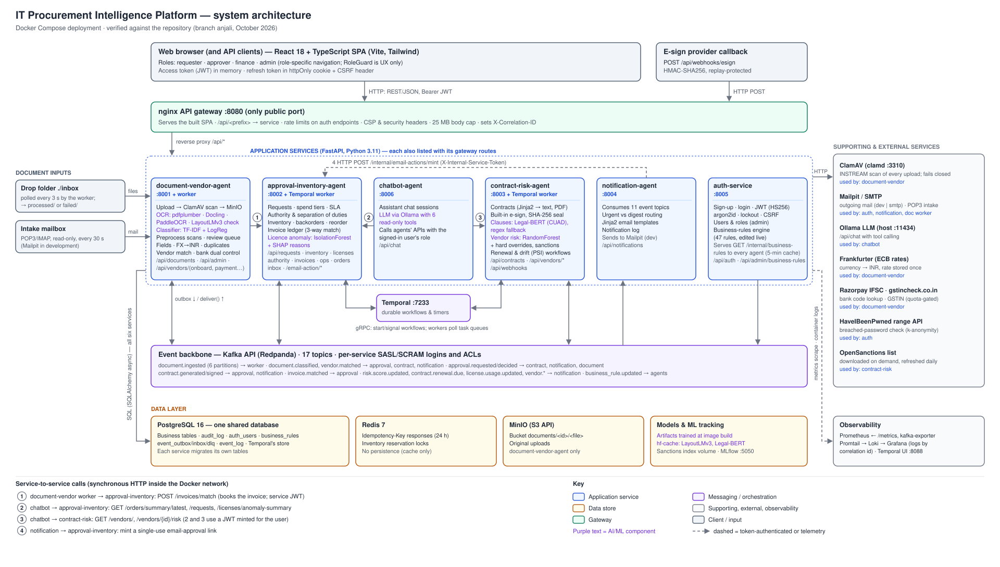

1. Project overview
An IT procurement platform that takes a vendor document from arrival to a signed contract and a matched invoice. Five cooperating services (“agents”) plus an assistant read documents with OCR and ML, route approvals, generate and sign contracts, score vendor risk and email the people involved. A person steps in only for decisions and uncertain cases.
anjali). The working tree had uncommitted edits at the time (a QA-hardening pass on API limits, contract
visibility and request validation), and those are included. Line numbers are taken from that working tree; the code is still
changing, so search for the function name if a line has moved. Text marked inference is a reasoned
reading of the code that was not confirmed by running it.Problem statement
Company procurement is a chain of manual hand-offs: someone retypes an invoice, chases an approver, drafts a contract, waits for a signature, then checks the invoice against the order by eye. It is slow, and the risky cases — a fake invoice, a changed bank account, a vendor on a sanctions list — are easy to miss (README.md, docs/showcase.html).
Objectives
- Automate intake, reading and classification of invoices, POs and quotes from upload, a drop folder or email.
- Route purchase requests by spend tier with enforced approval authority and separation of duties.
- Generate contracts, collect e-signatures, and remind people before renewal notice deadlines.
- Score vendor risk (model + hard checks such as GSTIN status and sanctions) and show it before anyone signs.
- Match invoices to what is left to invoice on the order (three-way match) and hold payments when something is off.
- Lose nothing: events are committed with the change they describe, retried, and parked visibly when they fail.
Intended users (roles)
| Role | What they do in the app |
|---|---|
requester | Create purchase requests, upload documents, see only their own requests, documents and (in the working tree) contracts. |
approver | Approval inbox for levels they are assigned to; licences, documents, vendors, contracts; can sign contracts. |
finance | Approvals, bank-detail verification (second person), vendor onboarding, risk signals, sanctions clearing, spend analysis, controls. |
admin | Everything, plus users, business rules, audit, control panel, system health. Still cannot approve their own request. |
Sign-up creates a requester; an admin changes roles. Five demo accounts are seeded in development only
(services/auth-service/seed_demo_users.py).
Major features and status
Status below is taken from docs/TODO.md §A.3 and docs/project-flow.html, both maintained by the team (“97 % of deliverables”). This guide did not re-run the full test suites; see Testing for the documented results.
| Area | Status (team's own) | Where |
|---|---|---|
| Intake: upload, batch, drop folder, email | Complete | document-vendor-agent |
| OCR / extraction | Partial — PDFs 100 % of fields, images ~49 % on the synthetic set | document-vendor-agent |
| Classification (incl. “other”) | Complete | document-vendor-agent |
| Vendor matching, onboarding, bank dual control, FX | Complete | document-vendor-agent |
| Approvals, authority, SoD, SLA reminders, email approval | Complete | approval-inventory-agent |
| Inventory, backorders, reorder, invoice ledger, licence anomalies | Complete | approval-inventory-agent |
| Contracts, built-in e-sign, renewals, clause model | Complete | contract-risk-agent |
| Vendor risk model, sanctions, drift | Partial (team marks the risk model partial) | contract-risk-agent |
| Notifications | Complete (email to Mailpit in dev) | notification-agent |
| Accounts, sessions, business rules | Complete | auth-service |
| Budget control before approval (feature expansion Phase 1) | Complete | approval-inventory-agent budget_service.py |
| Contract obligations after signature (Phase 2) | Complete; model use per obligation type pending the CUAD comparison | contract-risk-agent obligation_service.py |
| IT catalog, RFQs, partial goods receipts (Phase 3) | Complete | approval-inventory-agent catalog_service.py, sourcing_service.py, receipt_service.py |
| Vendor scorecard (Phase 3) | Complete | contract-risk-agent scorecard.py |
| Assistant (chatbot) | Partial; owned by Anooj | chatbot-agent |
| CI | Partial — builds images only | .github/workflows |
| Kubernetes, shared deployment | Not built / blocked on decisions and secrets | — |
Technology stack and why
“Documented” means the reason is written in the repository (comments, README, TODO). “Inference” means it's a reasonable reading, not a stated decision.
| Technology | Used for | Why |
|---|---|---|
| Python 3.11, FastAPI, Pydantic, SQLAlchemy 2 (async, asyncpg) | All six services | inference: async I/O suits a service that mostly waits on DB/Kafka/HTTP; Pydantic validation and OpenAPI for free. |
| Kafka API on Redpanda, aiokafka | Events between agents | Documented: agents hand work to each other through events; Redpanda chosen as a single-binary Kafka-compatible broker (inference for the Redpanda choice). Per-service SASL/SCRAM logins + ACLs (documented in shared/kafka_security.py). |
| Transactional outbox / consumer inbox | Reliable events | Documented in shared/eventing/outbox.py: a crash between commit and publish used to lose events (“requests stuck at approved”). |
| Temporal (temporalio 1.6) | Approvals, renewals, drift | Documented: long-running steps survive restarts; durable timers for SLA and renewal reminders. |
| PostgreSQL 16 (one shared DB) | All data, outbox, Temporal | Documented team decision (TODO §A.4). Simpler to run; the cost is cross-service coupling (see Reliability). |
| Redis 7 | Idempotency keys, inventory locks | Documented in shared/idempotency.py and redis_lock.py. |
| MinIO | Original files | S3-compatible object storage that runs locally. |
| ClamAV | Upload malware scanning | Documented “governance control B”: scan before storage, fail closed. |
| pdfplumber, Docling, PaddleOCR, OpenCV | Reading PDFs and images | Documented in ocr.py: fast native-text path; Docling for layout in scans; PaddleOCR for images, isolated in a subprocess because it can crash natively. |
| scikit-learn (TF-IDF + LR, IsolationForest, RandomForest), SHAP, MLflow | Classifier, licence anomalies, vendor risk | Documented: each model is evaluated against a simple baseline (docs/results). |
| Hugging Face transformers (LayoutLMv3, Legal-BERT CUAD) | Extraction cross-check, clause extraction | Documented: loaded from local cache only, with rule-based fallbacks. |
| React 18, TypeScript, Vite, Tailwind, React Router | Frontend | inference: common, typed SPA stack; built in a container so the host needs no Node. |
| nginx | Gateway + static files | Documented: same origin for SPA and API means no CORS; one place for rate limits and headers. |
| Prometheus, Grafana, Loki, Promtail | Metrics and logs | Documented FR-07: one correlation id searchable across all services. |
| Ollama | Assistant LLM | Documented: local model with tool calling (llama3.2:3b smallest that works). |
| Docker Compose | Deployment | Documented constraint: one machine; ~3.2 GB RAM idle. |
2. Architecture




Layers
- Client and inputs. The React SPA (served by nginx), e-sign provider callbacks, the
./inboxdrop folder and an intake mailbox. - Gateway. nginx on :8080 is the only public port. It routes
/api/<prefix>to services (infra/nginx/nginx.conf). - Services. Six FastAPI apps; three have a second process (document worker, two Temporal workers) built from the same image.
- Messaging/orchestration. Kafka for asynchronous hand-offs, Temporal for long waits and timers.
- Data. One PostgreSQL database, Redis, MinIO, model caches.
- Supporting/external. ClamAV, Mailpit/SMTP, Ollama and internet APIs. Observability: Prometheus, Loki, Grafana.
Components and responsibilities
| Component | Owns (tables) | Publishes | Consumes | Calls synchronously |
|---|---|---|---|---|
| document-vendor-agent :8001 (+ worker) | documents (ext.), vendors (ext.), vendor_payment_change_requests, vendor_quotes, pipeline_checkpoints, model_routing_log, extraction_feedback, vendor_field_hints, review_outcomes, event_log, email_intake | document.ingested, document.classified, vendor.matched, vendor.payment_details_flagged, invoice.matched, reminder.due | document.ingested, approval.decided, business_rule.updated | approval POST /invoices/match; auth rules; ClamAV; MinIO; Frankfurter; IFSC/GSTIN APIs |
| approval-inventory-agent :8002 (+ Temporal worker) | purchase_requests (ext.), approval_history, inventory, licenses (ext.), license_usage, license_reclaim_history, invoice_matches, invoice_allocations, approver_assignments, approval_delegations, order_status_summaries, email_action_tokens | approval.requested, approval.decided, license.usage.updated, notification.send, reminder.due, order.summary.generated | document.classified, contract.signed, invoice.matched, business_rule.updated | Temporal; auth rules; Redis |
| contract-risk-agent :8003 (+ Temporal worker) | contracts (ext.), risk_scores (ext.), vendor_risk_features, risk_score_outcomes, processed_webhook_events, model_routing_log, vendor_sanctions_screenings | contract.generated, contract.signed, contract.renewal.due, risk.score.updated, vendor.offboarded, notification.send, reminder.due | vendor.matched, approval.decided, business_rule.updated | Temporal; auth rules; MLflow; OpenSanctions |
| notification-agent :8004 | notification_log, notification_digest_queue, notification_reads | — | 11 topics (listed below the table) | approval /internal/email-actions/mint; SMTP/Mailpit |
| auth-service :8005 | auth_users (incl. display_name, theme), auth_tokens, auth_login_attempts, business_rules, business_rule_history | business_rule.updated | — | HaveIBeenPwned; SMTP |
| chatbot-agent :8006 | chat_sessions, chat_messages | — | — | Ollama; approval and contract-risk APIs |
“(ext.)” = a base table from shared/db/init.sql that this service extends with its own migration. All services also write
the shared audit_log and the outbox/inbox/DLQ tables. Exact consumer list for notification-agent:
document.classified, vendor.payment_details_flagged, license.usage.updated, approval.requested, approval.decided, contract.generated,
contract.signed, contract.renewal.due, risk.score.updated, vendor.offboarded, notification.send. reminder.due and
order.summary.generated currently have no consuming service (only the control panel's read-only monitor sees them;
reminder emails are listed as notification-agent work in TODO FR-03).
Execution and data flows
The end-to-end document flow is traced step by step in Trace this feature. Summary:
browser ──HTTP──▶ nginx ──/api/documents/upload──▶ document-vendor-agent
scan (ClamAV) → MinIO → documents row + outbox(document.ingested) [one transaction]
outbox relay ──▶ Kafka: document.ingested ──▶ document worker (claim pending→processing)
read → classify → extract → cross-check → vendor match → learn → FX → ledger(HTTP) → duplicates → confidence
results + outbox(document.classified, vendor.matched) [one transaction]
Kafka ──▶ contract-risk (score vendor) · notification (email) · approval (drop-folder quote → request)
request → ApprovalWorkflow (Temporal) → approval.decided ──▶ contract-risk: generate contract, auto-send
sign (built-in e-sign) → contract.signed ──▶ approval: request → ordered → (received) fulfilled
invoice upload → ledger match → partially_invoiced / invoice_receivedDesign decisions (documented) and their trade-offs
- Shared database, owned migrations. Easier to run and query across agents; but a foreign key from one service to a row another service is still writing in an open transaction fails — the reason new vendors are committed in their own transaction (services/document-vendor-agent/app/services/vendor_matching.py:85).
- Events only via the outbox. Events cannot be lost after a commit; delivery becomes at-least-once, so every consumer must be idempotent (inbox table + state machine no-ops). Some publishes still bypass it (see Reliability).
- Identity from the JWT only. No
requested_by/decided_byfrom bodies; tests guard it. - Built-in e-sign only since 15 Oct. Documenso/DocuSign clients are kept but not offered in the UI.
- Fail closed outside development.
APP_ENVdefaults to production, where published secrets, demo accounts, Mailpit and simulated signing are refused (shared/runtime_env.py). - Models never block the flow. Every ML step has a rule/heuristic fallback and is recorded in
model_routing_log.
3. Repository explorer
Every file in the repository (tracked, plus untracked files present on 17 Oct 2026) maps to one entry below; folders that hold many similar files are one entry with the file list inside. Build output and dependencies (node_modules/, frontend/dist/, ml/artifacts/, caches, venv/) are git-ignored and not listed.
Repository root
Entry points, Compose files and project-wide configuration.
README.mdReference / documentationCLAUDE.mdReference / documentationdocker-compose.ymlModify with careredpanda-init, minio, prometheus, loki, promtail, grafana, nginx (8080, the only port bound to all interfaces), kafka-exporter, temporal (auto-setup 1.21 on the shared Postgres), temporal-ui, mailpit (POP3 intake login), clamav. MinIO is pgsty/minio (pinned), the community continuation, since minio/minio can no longer be pulled; install.sh creates the bucket with the mc inside that container. Everything else is bound to 127.0.0.1. Dev passwords appear here as ${VAR:-default} fallbacks.docker-compose.override.ymlModify with careservices/<name>/Dockerfile with the repo root as context), their environment, healthchecks and volumes (hf-cache, docling-models, paddleocr-models, sanctions-data, mlflow-data), the chatbot (Ollama at host.docker.internal:11434), the frontend mount into nginx, Grafana provisioning and MLflow. Compose merges it automatically with the base file.docker-compose.override.yml.exampleSafe to modify.env.exampleModify with care.env with placeholder values only: APP_ENV, Postgres/MinIO credentials, JWT and internal secrets, optional API keys, email (EMAIL_MODE dev|smtp), lockout settings, optional Documenso/DocuSign blocks, Kafka passwords for production, email-action settings and the Ollama model. install.sh copies it to .env when missing. Never put real values here..envSecret — never commit.gitignoreModify with care.env, venv/, caches, frontend/dist/, trained model artifacts (**/ml/artifacts/), mlruns/, secrets/ and .run/. Note: also ignores *.xml.MakefileSafe to modifyrun (./run.sh), up, down, logs, reset (deletes all volumes, then install.sh), test (scripts/test-service.sh all), e2e (tests/e2e/run.sh).run.shModify with care.run/stamps) → build the frontend in a node:20-alpine container → docker compose up the app services → force-recreate nginx → wait up to 450 s for health and print a table. Flags --build, --no-build, --verbose. Full output in .run/run.log.install.shModify with care.env, starts Docker (scripts/ensure-docker.sh), starts only the core infrastructure, waits for Postgres/Redpanda/MinIO, applies shared/db/init.sql (best effort), shows the Kafka bootstrap result and creates a MinIO bucket it-procurement (the service actually uses and creates bucket documents itself, so this bucket appears unused — inference).run.ps1Safe to modify./run.sh inside WSL2. Readme notes this was not re-verified recently.run.batSafe to modifysimulate_esign.pySafe to modifypackage.jsonSafe to modifyreact-markdown and remark-gfm (with its lock file). The frontend has its own manifest that already includes both; nothing in the build reads this one — it looks like an accidental install at the root (inference).package-lock.jsonGenerated / build output.github/workflows/ci.ymlModify with careinbox/README.mdReference / documentationprocessed/ or failed/.inbox/.gitignoreSafe to modifyAgentic_AI_Proc_Soln_Rpt/Reference / documentation24 file(s)
Agentic_AI_Proc_Soln_Rpt/0Synopsis.bibAgentic_AI_Proc_Soln_Rpt/0Synopsis.lofAgentic_AI_Proc_Soln_Rpt/0Synopsis.lotAgentic_AI_Proc_Soln_Rpt/0Synopsis.texAgentic_AI_Proc_Soln_Rpt/1Title.texAgentic_AI_Proc_Soln_Rpt/2Approval.texAgentic_AI_Proc_Soln_Rpt/3Declaration.texAgentic_AI_Proc_Soln_Rpt/Abstract.texAgentic_AI_Proc_Soln_Rpt/Acknowledgment.texAgentic_AI_Proc_Soln_Rpt/AppendixD.texAgentic_AI_Proc_Soln_Rpt/Chapter1Introduction.texAgentic_AI_Proc_Soln_Rpt/Chapter2LiteratureSurvey.texAgentic_AI_Proc_Soln_Rpt/Chapter3ProposedSystem.texAgentic_AI_Proc_Soln_Rpt/Chapter4Design.texAgentic_AI_Proc_Soln_Rpt/Chapter5ResultandDiscussion.texAgentic_AI_Proc_Soln_Rpt/Chapter6Conclusion.texAgentic_AI_Proc_Soln_Rpt/appendixA.texAgentic_AI_Proc_Soln_Rpt/appendixB.texAgentic_AI_Proc_Soln_Rpt/appendixC.texAgentic_AI_Proc_Soln_Rpt/fcritlogo.jpgAgentic_AI_Proc_Soln_Rpt/figures/fig_architecture.pngAgentic_AI_Proc_Soln_Rpt/figures/fig_doc_pipeline.pngAgentic_AI_Proc_Soln_Rpt/figures/fig_event_flow.pngAgentic_AI_Proc_Soln_Rpt/figures/usecase.png
.run/Generated / build outputrun.sh's build stamps and log. Safe to delete (next run rebuilds what it can't verify).secrets/Secret — never commit/run/secrets/app..claude/Generated / build output__init__.py (all packages)Safe to modifyapp/ sub-package and in shared/. Required for python -m app.worker and imports.22 file(s)
services/approval-inventory-agent/app/__init__.pyservices/approval-inventory-agent/app/api/__init__.pyservices/approval-inventory-agent/app/kafka/__init__.pyservices/approval-inventory-agent/app/ml/__init__.pyservices/approval-inventory-agent/app/services/__init__.pyservices/approval-inventory-agent/app/workflows/__init__.pyservices/auth-service/app/__init__.pyservices/auth-service/app/api/__init__.pyservices/contract-risk-agent/app/__init__.pyservices/contract-risk-agent/app/api/__init__.pyservices/contract-risk-agent/app/kafka/__init__.pyservices/contract-risk-agent/app/services/__init__.pyservices/document-vendor-agent/app/__init__.pyservices/document-vendor-agent/app/api/__init__.pyservices/document-vendor-agent/app/kafka/__init__.pyservices/document-vendor-agent/app/services/__init__.pyservices/notification-agent/app/__init__.pyservices/notification-agent/app/api/__init__.pyservices/notification-agent/app/kafka/__init__.pyservices/notification-agent/app/services/__init__.pyshared/db/__init__.pyshared/http/__init__.py
infra/ — gateway, Kafka security, monitoring
Mounted read-only into the infrastructure containers.
infra/nginx/nginx.confModify with carelimit_req zones, security headers + CSP, JSON 429/413 pages, SPA fallback, /email-action/ (access log off), and the /api/<prefix> → service table (see API section). /api/vendors/* is split between two services with regex locations. Restart nginx after recreating any service — it resolves upstreams once.infra/redpanda/bootstrap.shModify with careredpanda-init: admin user, one SCRAM user per service, topics (document.ingested gets 6 partitions), ACLs from acls.conf, then enables SASL. Idempotent.infra/redpanda/acls.confModify with careinfra/prometheus/prometheus.ymlSafe to modifyinfra/promtail/config.ymlSafe to modifylevel, ships to Loki; drops the log stack's own logs.infra/grafana/provisioning/datasources/datasource.ymlSafe to modifyinfra/grafana/provisioning/dashboards/dashboard.ymlSafe to modifyinfra/grafana/dashboards/platform-overview.jsonSafe to modifyinfra/grafana/dashboards/logs.jsonSafe to modifyinfra/grafana/dashboards/.gitkeepSafe to modifyinfra/k8s/.gitkeepSafe to modifyscripts/ — operational helpers
Run from the repository root unless noted.
scripts/test-service.shSafe to modifyall: contract-risk, approval-inventory, document-vendor, notification, auth) inside its built image with the current source, shared/ and data/ mounted. Gives auth-service a throwaway auth_test database when the stack runs. chatbot-agent is not included (it has no tests folder).scripts/test-root.shSafe to modifyscripts/seed-demo-data.shSafe to modifyscripts/reset-demo.shModify with care.run/backups/ (with backup.sh), deletes only the data volumes (Postgres, MinIO, Kafka), restarts, seeds, then runs the five demo scenarios so the history is made by the real flows. Asks first unless --yes. About 3 minutes.scripts/backup.shSafe to modifypg_dumpall and the MinIO volume as a tar into .run/backups/<stamp>, without stopping anything; fails if the dump is incomplete.scripts/restore.shModify with care--yes).scripts/download-models.shSafe to modifyngvozdenovic/invoice_extraction) and Legal-BERT CUAD (alex-apostolo/legal-bert-base-cuad) into the hf-cache volume; restarts the two consumers. Services load models with local files only.scripts/download-sanctions.shSafe to modifypython -m app.services.sanctions refresh in contract-risk-agent (OpenSanctions, CC BY-NC 4.0).scripts/ensure-docker.shSafe to modifyscripts/ci-build.shSafe to modifyservices/*/Dockerfile with repo-root context and deletes the image afterwards.scripts/presentation_samples.pySafe to modifyscripts/generate_sso_logs.pySafe to modifyservices/document-vendor-agent — documents & vendors (port 8001)
Owner: Vaidehi. Raw-SQL migrations applied on every start (tuple MIGRATIONS in app/database.py). Two processes from one image: the API (uvicorn app.main:app) and the worker (python -m app.worker).
services/document-vendor-agent/DockerfileModify with careLD_PRELOAD=libz.so.1 (avoids a zlib clash between torchvision and Paddle) and trains the document classifier at build time from data/synthetic-classification.services/document-vendor-agent/requirements.txtModify with careservices/document-vendor-agent/config.yamlSafe to modifyservices/document-vendor-agent/app/main.pyModify with care/documents so /documents/audit isn't captured by /documents/{id}.services/document-vendor-agent/app/worker.pyModify with careservices/document-vendor-agent/app/config.pySafe to modifySettings (prefix APP_): MinIO, ClamAV, upload/batch limits, FX API, worker concurrency (4), inbox, email intake, event monitor, GSTIN key. Refuses the default MinIO secret outside development.services/document-vendor-agent/app/database.pyModify with careservices/document-vendor-agent/app/models.pyModify with careservices/document-vendor-agent/app/schemas.pySafe to modifyservices/document-vendor-agent/app/metrics.pySafe to modifyservices/document-vendor-agent/app/api/documents.pyModify with careservices/document-vendor-agent/app/api/vendors.pyModify with careservices/document-vendor-agent/app/api/admin.pySafe to modifyservices/document-vendor-agent/app/api/control_panel.pySafe to modifyservices/document-vendor-agent/app/api/showcase.pySafe to modifyservices/document-vendor-agent/app/api/health.pySafe to modify/health with a DB ping.services/document-vendor-agent/app/kafka/consumer.pyModify with careservices/document-vendor-agent/app/kafka/producer.pySafe to modifyKafkaEventProducer with one publish_* per topic; all funnel through publish so staged() can redirect them to the outbox.services/document-vendor-agent/app/kafka/events.pyModify with careservices/document-vendor-agent/app/services/upload_service.pyModify with careservices/document-vendor-agent/app/services/clamav_client.pyModify with careClamAVUnavailableError (fail closed).services/document-vendor-agent/app/services/storage.pySafe to modifybucket/key.services/document-vendor-agent/app/services/document_service.pyModify with careprocess_document orchestrates the pipeline and persists results/events atomically; transient failures go back to pending; submit_review applies human corrections; rematch_invoice books an invoice later.services/document-vendor-agent/app/services/pipeline.pyModify with careservices/document-vendor-agent/app/services/extraction_router.pyModify with careservices/document-vendor-agent/app/services/ocr.pyModify with careextract_text_isolated runs it in a killable child process.services/document-vendor-agent/app/services/_extract_worker.pySafe to modifyservices/document-vendor-agent/app/services/_paddle_worker.pySafe to modifyservices/document-vendor-agent/app/services/preprocess.pySafe to modifyservices/document-vendor-agent/app/services/classification.pySafe to modifyservices/document-vendor-agent/app/services/field_extraction.pyModify with careservices/document-vendor-agent/app/services/layoutlm_crosscheck.pySafe to modifyservices/document-vendor-agent/app/services/confidence.pySafe to modifyservices/document-vendor-agent/app/services/vendor_matching.pyModify with careservices/document-vendor-agent/app/services/duplicate_detection.pySafe to modifyservices/document-vendor-agent/app/services/fx.pySafe to modifyservices/document-vendor-agent/app/services/learning.pySafe to modifyservices/document-vendor-agent/app/services/vendor_payment_service.pyModify with careservices/document-vendor-agent/app/services/vendor_onboarding.pySafe to modifyservices/document-vendor-agent/app/services/vendor_tier_service.pySafe to modifyservices/document-vendor-agent/app/services/gstin_service.pySafe to modifyservices/document-vendor-agent/app/services/ifsc_service.pySafe to modifyservices/document-vendor-agent/app/services/inbox_watcher.pySafe to modifyservices/document-vendor-agent/app/services/email_intake.pySafe to modifyservices/document-vendor-agent/app/services/event_monitor.pySafe to modifyservices/document-vendor-agent/app/services/reminder_sweep.pySafe to modifyservices/document-vendor-agent/app/services/agent_contracts.pySafe to modifyAgentResult trail appended by each stage.services/document-vendor-agent/app/services/checkpoints.pySafe to modifyservices/document-vendor-agent/app/services/selective_gate.pySafe to modifyscripts/eval_selective.py.services/document-vendor-agent/app/services/audit.pySafe to modifywrite_audit_log helper.services/document-vendor-agent/migrations/Modify with careMIGRATIONS.11 file(s)
services/document-vendor-agent/migrations/0001_schema_extensions.sqlservices/document-vendor-agent/migrations/0002_model_routing_log.sqlservices/document-vendor-agent/migrations/0003_vendor_quotes.sqlservices/document-vendor-agent/migrations/0004_learning.sqlservices/document-vendor-agent/migrations/0005_processing_attempts.sqlservices/document-vendor-agent/migrations/0006_integrity.sqlservices/document-vendor-agent/migrations/0007_fx.sqlservices/document-vendor-agent/migrations/0008_event_log.sqlservices/document-vendor-agent/migrations/0009_email_intake.sqlservices/document-vendor-agent/migrations/0010_vendor_profile.sqlservices/document-vendor-agent/migrations/0011_vendor_ifsc_status.sql
services/document-vendor-agent/ml/Safe to modifyclassification_corpus.py (1,260 generated documents incl. other) and train_classifier.py (TF-IDF + logistic regression; saved only if it beats keywords; writes docs/results/classifier.*).2 file(s)
services/document-vendor-agent/ml/classification_corpus.pyservices/document-vendor-agent/ml/train_classifier.py
services/document-vendor-agent/scripts/Safe to modifysynthetic_invoice_lib.py (generator of the synthetic PDFs/images), generate_classification_dataset.py, eval_extraction.py (field accuracy with/without preprocessing → docs/results/extraction.md), and the research study: procurement_world.py (vendor master, POs, 3,000 invoices with injected errors), eval_selective.py (extract / evaluate → docs/results/selective.md), export_evidence.py (read-only export of the live pipeline's evidence).7 file(s)
services/document-vendor-agent/scripts/__init__.pyservices/document-vendor-agent/scripts/eval_extraction.pyservices/document-vendor-agent/scripts/eval_selective.pyservices/document-vendor-agent/scripts/export_evidence.pyservices/document-vendor-agent/scripts/procurement_world.pyservices/document-vendor-agent/scripts/generate_classification_dataset.pyservices/document-vendor-agent/scripts/synthetic_invoice_lib.py
services/document-vendor-agent/tests/Safe to modifyscripts/test-service.sh document-vendor-agent. See the Testing section for what each file checks.39 file(s)
services/document-vendor-agent/tests/__init__.pyservices/document-vendor-agent/tests/conftest.pyservices/document-vendor-agent/tests/test_agent_contracts.pyservices/document-vendor-agent/tests/test_audit_router.pyservices/document-vendor-agent/tests/test_batch_ingestion.pyservices/document-vendor-agent/tests/test_clamav.pyservices/document-vendor-agent/tests/test_classification.pyservices/document-vendor-agent/tests/test_classifier_routing.pyservices/document-vendor-agent/tests/test_confidence.pyservices/document-vendor-agent/tests/test_docling_extraction.pyservices/document-vendor-agent/tests/test_drop_folder.pyservices/document-vendor-agent/tests/test_email_intake.pyservices/document-vendor-agent/tests/test_event_log.pyservices/document-vendor-agent/tests/test_event_schemas.pyservices/document-vendor-agent/tests/test_extraction_confidence.pyservices/document-vendor-agent/tests/test_extraction_schema.pyservices/document-vendor-agent/tests/test_field_extraction.pyservices/document-vendor-agent/tests/test_fx.pyservices/document-vendor-agent/tests/test_gstin_service.pyservices/document-vendor-agent/tests/test_ifsc_service.pyservices/document-vendor-agent/tests/test_invoice_and_quote_processing.pyservices/document-vendor-agent/tests/test_layoutlm_crosscheck.pyservices/document-vendor-agent/tests/test_learning.pyservices/document-vendor-agent/tests/test_list_limits.pyservices/document-vendor-agent/tests/test_metrics.pyservices/document-vendor-agent/tests/test_ocr_runtime.pyservices/document-vendor-agent/tests/test_payment_quarantine.pyservices/document-vendor-agent/tests/test_pipeline_resilience.pyservices/document-vendor-agent/tests/test_preprocess.pyservices/document-vendor-agent/tests/test_rematch_on_approval.pyservices/document-vendor-agent/tests/test_reminder_sweep.pyservices/document-vendor-agent/tests/test_rules_wiring.pyservices/document-vendor-agent/tests/test_security_documents.pyservices/document-vendor-agent/tests/test_selective_gate.pyservices/document-vendor-agent/tests/test_tiered_vetting.pyservices/document-vendor-agent/tests/test_upload_scan.pyservices/document-vendor-agent/tests/test_vendor_commit.pyservices/document-vendor-agent/tests/test_vendor_matching.pyservices/document-vendor-agent/tests/test_vendor_onboarding.py
services/approval-inventory-agent — approvals, inventory, licences, ledger (port 8002)
Owner: Niraj. Applies every migrations/*.sql in name order on start. API process + Temporal worker from one image.
services/approval-inventory-agent/DockerfileModify with caredata/synthetic-sso-logs and trains the licence anomaly model at build time.services/approval-inventory-agent/requirements.txtModify with careservices/approval-inventory-agent/README.mdReference / documentationservices/approval-inventory-agent/config.yamlSafe to modifyservices/approval-inventory-agent/entrypoint.shSafe to modifyservices/approval-inventory-agent/app/main.pyModify with careNOT_FOUND; validation message is str(exc)), so error codes and validation messages differ from other services.services/approval-inventory-agent/app/worker.pyModify with careApprovalWorkflow and its activities; metrics :9100.services/approval-inventory-agent/app/config.pySafe to modifyanomaly_status_for().services/approval-inventory-agent/app/database.pyModify with careservices/approval-inventory-agent/app/models.pyModify with careperformed_by/details), EmailActionToken, read-only refs.services/approval-inventory-agent/app/schemas.pySafe to modifyservices/approval-inventory-agent/app/metrics.pySafe to modifyservices/approval-inventory-agent/app/api/requests.pyModify with careservices/approval-inventory-agent/app/api/inbox.pySafe to modifyservices/approval-inventory-agent/app/api/inventory.pySafe to modifyservices/approval-inventory-agent/app/api/licenses.pySafe to modifyservices/approval-inventory-agent/app/api/authority.pyModify with careservices/approval-inventory-agent/app/api/invoices.pyModify with carePOST /match books for the service role (dry-run for finance/admin), holds release, per-request ledger, match list.services/approval-inventory-agent/app/api/orders.pySafe to modifyservices/approval-inventory-agent/app/api/ops.pySafe to modifyservices/approval-inventory-agent/app/api/email_action.pyModify with careGET /email-action/{token} renders a confirmation page (no state change), POST …/decide applies the decision in a locked transaction.services/approval-inventory-agent/app/api/internal_email_action.pyModify with carePOST /internal/email-actions/mint (X-Internal-Service-Token). Not routed by the gateway. Compares the token with != and does not refuse the published default in production — see Security.services/approval-inventory-agent/app/api/health.pySafe to modify/health.services/approval-inventory-agent/app/templates/email_action/Safe to modify2 file(s)
services/approval-inventory-agent/app/templates/email_action/decision_page.htmlservices/approval-inventory-agent/app/templates/email_action/status_page.html
services/approval-inventory-agent/app/services/approval_service.pyModify with careservices/approval-inventory-agent/app/services/approval_authority.pyModify with careevaluate_authority (separation of duties, assignment/delegation, amount limit) + DB helpers.services/approval-inventory-agent/app/services/invoice_ledger.pyModify with careservices/approval-inventory-agent/app/services/inventory_service.pyModify with careservices/approval-inventory-agent/app/services/redis_lock.pySafe to modifyservices/approval-inventory-agent/app/services/reorder.pySafe to modifyservices/approval-inventory-agent/app/services/order_monitor.pySafe to modifyreconcile() repair of lost contract.signed effects.services/approval-inventory-agent/app/services/email_action_token_service.pyModify with careservices/approval-inventory-agent/app/services/usage_service.pySafe to modifyservices/approval-inventory-agent/app/usage_scanner.pySafe to modifyservices/approval-inventory-agent/app/ml/usage_anomaly.pySafe to modifyservices/approval-inventory-agent/app/workflows/approval_workflow.pyModify with careApprovalWorkflow: reclaim grace period, per-level wait with SLA reminders, escalation, rejection, final approval. Uses Temporal patching to keep old workflows replayable — change with care.services/approval-inventory-agent/app/workflows/activities.pyModify with careservices/approval-inventory-agent/app/kafka/consumer.pyModify with caredeliver(). Also apply_received.services/approval-inventory-agent/app/kafka/producer.pySafe to modifyservices/approval-inventory-agent/app/kafka/events.pyModify with careservices/approval-inventory-agent/migrations/0001_schema_extensions.sqlModify with careservices/approval-inventory-agent/migrations/0002_email_action_tokens.sqlModify with careservices/approval-inventory-agent/ml/Safe to modifyusage_population.py (seeded population of licences with known patterns), generate_usage_dataset.py, train_usage_anomaly_model.py (IsolationForest, 200 trees, contamination 0.3, MLflow), evaluate_usage_anomaly.py (thresholds → docs/results/licence-anomaly.md).4 file(s)
services/approval-inventory-agent/ml/evaluate_usage_anomaly.pyservices/approval-inventory-agent/ml/generate_usage_dataset.pyservices/approval-inventory-agent/ml/train_usage_anomaly_model.pyservices/approval-inventory-agent/ml/usage_population.py
services/approval-inventory-agent/scripts/generate_sso_logs.pySafe to modifyservices/approval-inventory-agent/tests/Safe to modify24 file(s)
services/approval-inventory-agent/tests/__init__.pyservices/approval-inventory-agent/tests/conftest.pyservices/approval-inventory-agent/tests/test_approval_authority.pyservices/approval-inventory-agent/tests/test_approval_reminders.pyservices/approval-inventory-agent/tests/test_decline_reclaim.pyservices/approval-inventory-agent/tests/test_drop_folder_requests.pyservices/approval-inventory-agent/tests/test_event_schemas.pyservices/approval-inventory-agent/tests/test_inventory_reservation.pyservices/approval-inventory-agent/tests/test_invoice_ledger.pyservices/approval-inventory-agent/tests/test_license_anomaly_endpoints.pyservices/approval-inventory-agent/tests/test_lifecycle_enforcement.pyservices/approval-inventory-agent/tests/test_metrics.pyservices/approval-inventory-agent/tests/test_order_monitor.pyservices/approval-inventory-agent/tests/test_outbox_publishing.pyservices/approval-inventory-agent/tests/test_qa_audit_regressions.pyservices/approval-inventory-agent/tests/test_redis_lock.pyservices/approval-inventory-agent/tests/test_reorder.pyservices/approval-inventory-agent/tests/test_rules_wiring.pyservices/approval-inventory-agent/tests/test_security_approvals.pyservices/approval-inventory-agent/tests/test_spend_tier.pyservices/approval-inventory-agent/tests/test_usage_anomaly.pyservices/approval-inventory-agent/tests/test_usage_population.pyservices/approval-inventory-agent/tests/test_usage_reclaim.pyservices/approval-inventory-agent/tests/test_workflow_api_usage.py
services/contract-risk-agent — contracts, e-signature, vendor risk (port 8003)
Owner: Anjali. Alembic migrations (version table alembic_version_contract_risk_agent) run by docker-entrypoint.sh.
services/contract-risk-agent/DockerfileModify with careservices/contract-risk-agent/docker-entrypoint.shModify with carealembic upgrade head → train the model if the artifact is missing → exec.services/contract-risk-agent/requirements.txtModify with careservices/contract-risk-agent/config.yamlSafe to modifyservices/contract-risk-agent/alembic.iniModify with careservices/contract-risk-agent/migrations/Modify with care9 file(s)
services/contract-risk-agent/migrations/env.pyservices/contract-risk-agent/migrations/script.py.makoservices/contract-risk-agent/migrations/versions/0001_contract_risk_extensions.pyservices/contract-risk-agent/migrations/versions/0002_webhook_events_idempotency.pyservices/contract-risk-agent/migrations/versions/0003_model_routing_log.pyservices/contract-risk-agent/migrations/versions/0004_integrity.pyservices/contract-risk-agent/migrations/versions/0005_webhook_table_fresh_db.pyservices/contract-risk-agent/migrations/versions/0006_risk_signal_coverage.pyservices/contract-risk-agent/migrations/versions/0007_sanctions_screening.py
services/contract-risk-agent/app/main.pyModify with careservices/contract-risk-agent/app/worker.pyModify with careservices/contract-risk-agent/app/config.pyModify with careservices/contract-risk-agent/app/database.pySafe to modifyservices/contract-risk-agent/app/models.pyModify with careservices/contract-risk-agent/app/schemas.pySafe to modifyrisk_acknowledged, offboard, log outcome).services/contract-risk-agent/app/metrics.pySafe to modifyservices/contract-risk-agent/app/api/contracts.pyModify with carerisk_acknowledgement_required), certificate, simulated sign (dev only), list, renewals due, PDF and signed copy, detail. Working tree scopes lists/details to the requester's own contracts for non-staff.services/contract-risk-agent/app/api/vendors.pyModify with careservices/contract-risk-agent/app/api/webhooks.pyModify with careservices/contract-risk-agent/app/api/ops.pySafe to modifyservices/contract-risk-agent/app/api/health.pySafe to modify/health.services/contract-risk-agent/app/kafka/consumer.pyModify with careservices/contract-risk-agent/app/kafka/producer.pySafe to modifyservices/contract-risk-agent/app/kafka/events.pyModify with careservices/contract-risk-agent/app/services/contract_service.pyModify with careservices/contract-risk-agent/app/services/contract_pdf.pySafe to modifyservices/contract-risk-agent/app/services/clause_router.pySafe to modifyservices/contract-risk-agent/app/services/clause_model.pySafe to modifyservices/contract-risk-agent/app/services/clause_extraction.pySafe to modifyservices/contract-risk-agent/app/services/risk_service.pyModify with careservices/contract-risk-agent/app/services/risk_signals.pySafe to modifyservices/contract-risk-agent/app/services/sanctions.pySafe to modifyservices/contract-risk-agent/app/services/drift_service.pySafe to modifyservices/contract-risk-agent/app/services/renewal_schedule.pySafe to modifyservices/contract-risk-agent/app/services/webhook_service.pyModify with careservices/contract-risk-agent/app/services/esign_client.pySafe to modifyrequest_signature: uploads the PDF to Documenso when it is configured, otherwise records a simulated provider reference; recognises live provider references.services/contract-risk-agent/app/services/docusign_client.pySafe to modifyservices/contract-risk-agent/app/services/reminder_sweep.pySafe to modifycontract.signature_reminder_days.services/contract-risk-agent/app/services/offboard_service.pySafe to modifyservices/contract-risk-agent/app/services/temporal_client.pySafe to modifyservices/contract-risk-agent/app/services/audit.pySafe to modifyservices/contract-risk-agent/app/workflows/Modify with carerenewal_workflow.py (durable timers via asyncio.sleep; patched for the notice-deadline change), drift_workflow.py, activities.py.4 file(s)
services/contract-risk-agent/app/workflows/__init__.pyservices/contract-risk-agent/app/workflows/activities.pyservices/contract-risk-agent/app/workflows/drift_workflow.pyservices/contract-risk-agent/app/workflows/renewal_workflow.py
services/contract-risk-agent/app/templates/Safe to modify3 file(s)
services/contract-risk-agent/app/templates/hardware_purchase.j2services/contract-risk-agent/app/templates/professional_services.j2services/contract-risk-agent/app/templates/saas_subscription.j2
services/contract-risk-agent/ml/Safe to modifygenerate_vendor_dataset.py, train_risk_model.py (RF 200 trees, depth 6, balanced, 20 % values blanked), evaluate_risk_model.py, evaluate_clause_model.py, redteam_profiles.json.5 file(s)
services/contract-risk-agent/ml/evaluate_clause_model.pyservices/contract-risk-agent/ml/evaluate_risk_model.pyservices/contract-risk-agent/ml/generate_vendor_dataset.pyservices/contract-risk-agent/ml/redteam_profiles.jsonservices/contract-risk-agent/ml/train_risk_model.py
services/contract-risk-agent/tests/Safe to modify21 file(s)
services/contract-risk-agent/tests/__init__.pyservices/contract-risk-agent/tests/conftest.pyservices/contract-risk-agent/tests/test_clause_extraction.pyservices/contract-risk-agent/tests/test_clause_router.pyservices/contract-risk-agent/tests/test_contract_access.pyservices/contract-risk-agent/tests/test_contract_documents.pyservices/contract-risk-agent/tests/test_digital_esign.pyservices/contract-risk-agent/tests/test_docusign.pyservices/contract-risk-agent/tests/test_esign_webhook.pyservices/contract-risk-agent/tests/test_event_schemas.pyservices/contract-risk-agent/tests/test_metrics.pyservices/contract-risk-agent/tests/test_reminder_sweep.pyservices/contract-risk-agent/tests/test_renewal_schedule.pyservices/contract-risk-agent/tests/test_risk_model.pyservices/contract-risk-agent/tests/test_risk_signals.pyservices/contract-risk-agent/tests/test_rules_wiring.pyservices/contract-risk-agent/tests/test_sanctions.pyservices/contract-risk-agent/tests/test_security_config.pyservices/contract-risk-agent/tests/test_signing_controls.pyservices/contract-risk-agent/tests/test_signing_risk.pyservices/contract-risk-agent/tests/test_workflow_api_usage.py
services/notification-agent — email notifications (port 8004)
Owner: Anooj (email automation is his area — document, don't redesign). Raw-SQL migration applied on start.
services/notification-agent/DockerfileSafe to modifyservices/notification-agent/docker-entrypoint.shSafe to modifyservices/notification-agent/requirements.txtSafe to modifyservices/notification-agent/config.yamlSafe to modifyservices/notification-agent/app/main.pySafe to modifyservices/notification-agent/app/config.pySafe to modifyservices/notification-agent/app/database.pySafe to modifyservices/notification-agent/app/models.pySafe to modifyservices/notification-agent/app/schemas.pySafe to modifyservices/notification-agent/app/metrics.pySafe to modifyservices/notification-agent/app/api/notifications.pySafe to modifyGET /notifications/log (approver/finance/admin); GET /notifications/feed, /unread-count, POST /{id}/read, /read-all for every signed-in person.services/notification-agent/app/api/health.pySafe to modify/health including the consumer's state (unhealthy if it stopped).services/notification-agent/app/kafka/consumer.pyModify with caredeliver(); per-event handlers; mints an email-approval link for approval.requested.services/notification-agent/app/kafka/events.pySafe to modifyservices/notification-agent/app/services/routing.pySafe to modifyservices/notification-agent/app/services/dispatcher.pySafe to modifyservices/notification-agent/app/services/digest_service.pySafe to modifyservices/notification-agent/app/services/templating.pySafe to modifyservices/notification-agent/app/services/email_service.pySafe to modifyservices/notification-agent/app/services/directory.pySafe to modifyservices/notification-agent/app/services/feed.pySafe to modifyconfig.yaml role_mailboxes. "Important" (the default view and the bell's unread count) keeps only urgent, delivered notifications, minus digest roll-ups and contract.signed; History shows everything sent to you.services/notification-agent/app/services/log_service.pySafe to modifyservices/notification-agent/app/templates/Safe to modify13 file(s)
services/notification-agent/app/templates/approval_decided.j2services/notification-agent/app/templates/approval_requested.j2services/notification-agent/app/templates/contract_generated.j2services/notification-agent/app/templates/contract_renewal_due.j2services/notification-agent/app/templates/contract_signed.j2services/notification-agent/app/templates/digest_summary.j2services/notification-agent/app/templates/document_classified.j2services/notification-agent/app/templates/email_action_confirmation.j2services/notification-agent/app/templates/generic_fallback.j2services/notification-agent/app/templates/license_usage_updated.j2services/notification-agent/app/templates/risk_score_updated.j2services/notification-agent/app/templates/vendor_offboarded.j2services/notification-agent/app/templates/vendor_payment_details_flagged.j2
services/notification-agent/migrations/0001_notification_tables.sqlModify with careservices/notification-agent/tests/Safe to modifytest_feed.py, real Postgres).9 file(s)
services/notification-agent/tests/__init__.pyservices/notification-agent/tests/conftest.pyservices/notification-agent/tests/test_consumer_reliability.pyservices/notification-agent/tests/test_digest_routing.pyservices/notification-agent/tests/test_event_schemas.pyservices/notification-agent/tests/test_feed.pyservices/notification-agent/tests/test_metrics.pyservices/notification-agent/tests/test_notification_log_access.pyservices/notification-agent/tests/test_templates.py
services/auth-service — accounts, sessions, business rules (port 8005)
Owner: Anooj. Alembic (alembic_version_auth_service). Database URL comes from AUTH_DATABASE_URL.
services/auth-service/DockerfileSafe to modifyservices/auth-service/docker-entrypoint.shModify with carealembic upgrade head → seed demo users (dev only) → exec.services/auth-service/requirements.txtSafe to modifyservices/auth-service/alembic.iniModify with careservices/auth-service/migrations/Modify with care16 file(s)
services/auth-service/migrations/env.pyservices/auth-service/migrations/script.py.makoservices/auth-service/migrations/versions/0001_create_auth_users.pyservices/auth-service/migrations/versions/0002_create_business_rules.pyservices/auth-service/migrations/versions/0003_account_lifecycle.pyservices/auth-service/migrations/versions/0004_contract_auto_send_rule.pyservices/auth-service/migrations/versions/0005_reminder_rules.pyservices/auth-service/migrations/versions/0006_event_log_retention_rule.pyservices/auth-service/migrations/versions/0007_image_preprocessing_rule.pyservices/auth-service/migrations/versions/0008_reorder_rules.pyservices/auth-service/migrations/versions/0009_expected_delivery_rule.pyservices/auth-service/migrations/versions/0010_seed_rules_read_by_code.pyservices/auth-service/migrations/versions/0011_force_model_fallback_rule.pyservices/auth-service/migrations/versions/0012_licence_anomaly_thresholds.pyservices/auth-service/migrations/versions/0013_user_profile.pyservices/auth-service/migrations/versions/0014_revoked_refresh_tokens.py
services/auth-service/seed_demo_users.pyModify with careservices/auth-service/app/main.pySafe to modifyservices/auth-service/app/config.pySafe to modifyAUTH_-prefixed settings.services/auth-service/app/database.pySafe to modifyservices/auth-service/app/models.pyModify with careservices/auth-service/app/schemas.pySafe to modifyservices/auth-service/app/security.pyModify with careservices/auth-service/app/account_tokens.pyModify with careservices/auth-service/app/lockout.pyModify with careservices/auth-service/app/session_cookies.pyModify with careservices/auth-service/app/emails.pySafe to modify#; send failures logged, not raised.services/auth-service/app/audit.pySafe to modifyservices/auth-service/app/kafka_producer.pySafe to modifyservices/auth-service/app/api/auth.pyModify with careservices/auth-service/app/api/users.pyModify with careservices/auth-service/app/api/business_rules.pyModify with careservices/auth-service/app/api/health.pySafe to modify/health.services/auth-service/tests/Safe to modify9 file(s)
services/auth-service/tests/__init__.pyservices/auth-service/tests/conftest.pyservices/auth-service/tests/test_account_flows.pyservices/auth-service/tests/test_auth_hardening.pyservices/auth-service/tests/test_business_rules.pyservices/auth-service/tests/test_jwt.pyservices/auth-service/tests/test_security.pyservices/auth-service/tests/test_seed_guard.pyservices/auth-service/tests/test_session_cookies.py
services/chatbot-agent — assistant (port 8006)
Owner: Anooj (the team asked not to build the chatbot further). Recently merged; lighter than the other services: no correlation middleware, no shared error handlers, no /metrics, no tests folder.
services/chatbot-agent/DockerfileSafe to modifyservices/chatbot-agent/docker-entrypoint.shSafe to modifyservices/chatbot-agent/requirements.txtSafe to modifyservices/chatbot-agent/config.yamlSafe to modifyservices/chatbot-agent/app/main.pySafe to modifyservices/chatbot-agent/app/config.pySafe to modifyservices/chatbot-agent/app/database.pySafe to modify;.services/chatbot-agent/app/models.pySafe to modifyservices/chatbot-agent/app/schemas.pySafe to modifyservices/chatbot-agent/app/api/chat.pyModify with carePOST /chat/: stores the message, sends the last 10 messages to the LLM, stores and returns the reply. The given session_id is not checked against the caller — see Security.services/chatbot-agent/app/api/health.pySafe to modify/health.services/chatbot-agent/app/services/llm_client.pyModify with care/api/chat with six tool definitions; one round of tool calls, then the final answer.services/chatbot-agent/app/services/context_service.pyModify with careservices/chatbot-agent/app/services/chat.pySafe to modifyservices/chatbot-agent/app/Safe to modify3 file(s)
services/chatbot-agent/app/__init__.pyservices/chatbot-agent/app/api/__init__.pyservices/chatbot-agent/app/services/__init__.py
services/chatbot-agent/migrations/0001_chat_tables.sqlModify with carefrontend/ — React application
React 18 + TypeScript + Vite + Tailwind; built into frontend/dist (generated, git-ignored) which nginx serves. API modules mirror the services; each agent's actions live in one component reused everywhere.
frontend/package.jsonModify with caredev (Vite on 5173, proxies /api to :8080), build (tsc + vite build), typecheck. Deps: react, react-router-dom 7, vite 6, lucide-react, react-markdown, remark-gfm.frontend/package-lock.jsonGenerated / build outputfrontend/vite.config.tsSafe to modify@ alias to src, dev proxy, sourcemaps, outDir dist.frontend/tsconfig.jsonSafe to modifyfrontend/tailwind.config.jsSafe to modifyfrontend/postcss.config.jsSafe to modifyfrontend/index.htmlSafe to modifyfrontend/legacy-static/Safe to modify3 file(s)
frontend/legacy-static/app.jsfrontend/legacy-static/index.htmlfrontend/legacy-static/style.css
frontend/src/main.tsxSafe to modify<App/>.frontend/src/App.tsxSafe to modifyfrontend/src/app/router.tsxModify with care/app shell, lazy pages, RoleGuard per area (working tree makes Notifications staff-only).frontend/src/app/ProtectedRoute.tsxSafe to modifyfrontend/src/app/RoleGuard.tsxSafe to modifyfrontend/src/api/client.tsModify with carefrontend/src/api/Safe to modify13 file(s)
frontend/src/api/auth.tsfrontend/src/api/businessRules.tsfrontend/src/api/chat.tsfrontend/src/api/contracts.tsfrontend/src/api/controlPanel.tsfrontend/src/api/controls.tsfrontend/src/api/documents.tsfrontend/src/api/inventory.tsfrontend/src/api/licenses.tsfrontend/src/api/notifications.tsfrontend/src/api/orders.tsfrontend/src/api/requests.tsfrontend/src/api/vendors.ts
frontend/src/hooks/useAuth.tsxModify with carefrontend/src/hooks/Safe to modifyGET /auth/people: names instead of emails, used by components/people/PersonName), useUnreadNotifications (the bell's count).8 file(s)
frontend/src/hooks/useApi.tsfrontend/src/hooks/useDebounce.tsfrontend/src/hooks/useMediaQuery.tsfrontend/src/hooks/usePageTitle.tsxfrontend/src/hooks/usePeople.tsxfrontend/src/hooks/usePolling.tsfrontend/src/hooks/useTheme.tsxfrontend/src/hooks/useUnreadNotifications.tsx
frontend/src/layouts/Safe to modify3 file(s)
frontend/src/layouts/AppShell.tsxfrontend/src/layouts/Sidebar.tsxfrontend/src/layouts/Topbar.tsx
frontend/src/lib/lifecycle.tsSafe to modifyfrontend/src/lib/Safe to modify6 file(s)
frontend/src/lib/cn.tsfrontend/src/lib/constants.tsfrontend/src/lib/documentPipeline.tsfrontend/src/lib/format.tsfrontend/src/lib/roleNav.tsfrontend/src/lib/routes.ts
frontend/src/types/api.tsModify with carefrontend/src/components/approvals/ApprovalActions.tsxModify with carefrontend/src/components/contracts/Modify with care5 file(s)
frontend/src/components/contracts/ContractActions.tsxfrontend/src/components/contracts/DigitalSignatureModal.tsxfrontend/src/components/contracts/GenerateContractModal.tsxfrontend/src/components/contracts/SignatureCertificateModal.tsxfrontend/src/components/contracts/VendorRiskPanel.tsx
frontend/src/components/vendors/Safe to modify5 file(s)
frontend/src/components/vendors/PaymentChangeVerify.tsxfrontend/src/components/vendors/RiskGauge.tsxfrontend/src/components/vendors/RiskSignalsCard.tsxfrontend/src/components/vendors/SanctionsScreening.tsxfrontend/src/components/vendors/VendorOnboardingForm.tsx
frontend/src/components/controls/Safe to modify8 file(s)
frontend/src/components/controls/AuthorityPanel.tsxfrontend/src/components/controls/DocumentControls.tsxfrontend/src/components/controls/Explainer.tsxfrontend/src/components/controls/InvoiceLedgerCard.tsxfrontend/src/components/controls/LearningPanel.tsxfrontend/src/components/controls/LedgerPanel.tsxfrontend/src/components/controls/PaymentPanel.tsxfrontend/src/components/controls/ReliabilityPanel.tsx
frontend/src/components/Safe to modify31 file(s)
frontend/src/components/CommandPalette.tsxfrontend/src/components/auth/AuthLayout.tsxfrontend/src/components/charts/CategoryBarChart.tsxfrontend/src/components/charts/UsageTrendChart.tsxfrontend/src/components/dashboard/AttentionCard.tsxfrontend/src/components/dashboard/Greeting.tsxfrontend/src/components/dashboard/LicenseIntelligenceCard.tsxfrontend/src/components/dashboard/OrderStatusCard.tsxfrontend/src/components/documents/DocumentAmount.tsxfrontend/src/components/documents/DocumentPreviewCard.tsxfrontend/src/components/documents/DocumentPreviewModal.tsxfrontend/src/components/inventory/ReorderSettings.tsxfrontend/src/components/requests/ApprovalChainVisual.tsxfrontend/src/components/requests/ProcurementAssessment.tsxfrontend/src/components/ui/Badge.tsxfrontend/src/components/ui/Button.tsxfrontend/src/components/ui/Card.tsxfrontend/src/components/ui/ChatDrawer.tsxfrontend/src/components/ui/ConfidenceIndicator.tsxfrontend/src/components/ui/DataTable.tsxfrontend/src/components/ui/Drawer.tsxfrontend/src/components/ui/EmptyState.tsxfrontend/src/components/ui/ErrorState.tsxfrontend/src/components/ui/FileUploader.tsxfrontend/src/components/ui/LifecycleStepper.tsxfrontend/src/components/ui/MetricCard.tsxfrontend/src/components/ui/Modal.tsxfrontend/src/components/ui/NumberedStepper.tsxfrontend/src/components/ui/Skeleton.tsxfrontend/src/components/ui/Tabs.tsxfrontend/src/components/ui/Timeline.tsx
frontend/src/pages/Safe to modify/app/system with cards for users, business rules, audit, control panel, controls, system health; user profile /app/users/:id).36 file(s)
frontend/src/pages/LoginPage.tsxfrontend/src/pages/NotFoundPage.tsxfrontend/src/pages/account/AccountPage.tsxfrontend/src/pages/admin/AuditActivityPage.tsxfrontend/src/pages/admin/BusinessRulesPage.tsxfrontend/src/pages/admin/ControlPanelPage.tsxfrontend/src/pages/admin/ControlsPage.tsxfrontend/src/pages/admin/SystemHealthPage.tsxfrontend/src/pages/admin/SystemPage.tsxfrontend/src/pages/admin/UserProfilePage.tsxfrontend/src/pages/admin/UsersPage.tsxfrontend/src/pages/approvals/ApprovalInboxPage.tsxfrontend/src/pages/auth/ForgotPasswordPage.tsxfrontend/src/pages/auth/ResetPasswordPage.tsxfrontend/src/pages/auth/SignUpPage.tsxfrontend/src/pages/auth/VerifyEmailPage.tsxfrontend/src/pages/contracts/ContractDetailPage.tsxfrontend/src/pages/contracts/ContractsListPage.tsxfrontend/src/pages/dashboard/AdminDashboard.tsxfrontend/src/pages/dashboard/ApproverDashboard.tsxfrontend/src/pages/dashboard/DashboardPage.tsxfrontend/src/pages/dashboard/FinanceDashboard.tsxfrontend/src/pages/dashboard/RequesterDashboard.tsxfrontend/src/pages/documents/DocumentDetailPage.tsxfrontend/src/pages/documents/DocumentsListPage.tsxfrontend/src/pages/finance/SpendAnalysisPage.tsxfrontend/src/pages/inventory/InventoryPage.tsxfrontend/src/pages/licenses/LicenseDetailPage.tsxfrontend/src/pages/licenses/LicensesListPage.tsxfrontend/src/pages/notifications/NotificationsPage.tsxfrontend/src/pages/requests/NewRequestWizardPage.tsxfrontend/src/pages/requests/RequestDetailPage.tsxfrontend/src/pages/requests/RequestsListPage.tsxfrontend/src/pages/risk/RiskDashboardPage.tsxfrontend/src/pages/vendors/VendorDetailPage.tsxfrontend/src/pages/vendors/VendorsListPage.tsx
frontend/src/styles/index.cssSafe to modifyfrontend/src/styles/tokens.cssModify with care:root[data-theme="dark"] redefines every token for dark mode; Tailwind's white means text on a solid fill (--on-fill), surfaces use sheet.frontend/public/theme-init.jsSafe to modifydata-theme before the first paint, so a dark-mode user never sees a white flash.frontend/src/vite-env.d.tsSafe to modifytests/ — cross-service and end-to-end tests
Root tests import shared/; e2e scripts talk to the running stack through the gateway (install tests/e2e/requirements.txt on the host).
tests/test_kafka_acls.pyModify with caretests/test_business_rules_registry.pySafe to modifytests/test_eventing.pySafe to modifytests/test_lifecycle.pySafe to modifytests/test_correlation.pySafe to modifytests/test_log_redaction.pySafe to modifytests/test_mailer.pySafe to modifytests/test_reminders.pySafe to modifytests/test_rules_engine.pySafe to modifytests/test_security_config.pySafe to modifytests/test_taxonomy.pySafe to modifytests/test_email_action.pySafe to modifytests/test_chatbot_e2e.pySafe to modifytests/e2e/run.shSafe to modifymake e2e: bash flow through the gateway (login, ClamAV, request → approve → contract → webhook → risk → email → rule change).tests/e2e/invoice_lifecycle.pySafe to modifytests/e2e/document_pipeline.pySafe to modify--quick available).tests/e2e/auth_flows.pySafe to modifytests/e2e/test_flow.pySafe to modifytests/e2e/test_email_approval_and_signing.pySafe to modifytests/e2e/ui_flows.pySafe to modifytests/e2e/showcase_screens.pySafe to modifytests/e2e/presentation_screens.pySafe to modifytests/e2e/demo_scenarios.pySafe to modifytests/e2e/demo_5min.pySafe to modifydocs/demo/backup-recording.webm.tests/e2e/requirements.txtSafe to modifydata/ — synthetic datasets
All data is synthetic; provenance in each README.
data/README.mdReference / documentationdata/synthetic-invoices/Safe to modifymanifest.json ground truth, used by eval_extraction.py and demos.23 file(s)
data/synthetic-invoices/00_invoice_hpindiasalespvtltd_INV-2026-00001.pdfdata/synthetic-invoices/01_po_delltechnologiesindi_PO-2026-00002.pdfdata/synthetic-invoices/02_quote_delltechnologiesindi_QT-2026-00003.pdfdata/synthetic-invoices/03_invoice_freshworksinc_INV-2026-00004.pdfdata/synthetic-invoices/04_po_amazonwebservicesinc_PO-2026-00005.pngdata/synthetic-invoices/05_quote_freshworksinc_QT-2026-00006.pdfdata/synthetic-invoices/06_invoice_hpindiasalespvtltd_INV-2026-00007.pdfdata/synthetic-invoices/07_po_delltechnologiesindi_PO-2026-00008.pdfdata/synthetic-invoices/08_quote_freshworksinc_QT-2026-00009.pdfdata/synthetic-invoices/09_invoice_zohocorporation_INV-2026-00010.pngdata/synthetic-invoices/10_po_lenovoindiapvtltd_PO-2026-00011.pdfdata/synthetic-invoices/11_quote_atlassianptyltd_QT-2026-00012.pdfdata/synthetic-invoices/12_invoice_atlassianptyltd_INV-2026-00013.pdfdata/synthetic-invoices/13_po_delltechnologiesindi_PO-2026-00014.pdfdata/synthetic-invoices/14_quote_hpindiasalespvtltd_QT-2026-00015.pngdata/synthetic-invoices/15_invoice_atlassianptyltd_INV-2026-00016.pdfdata/synthetic-invoices/16_invoice_hpindiasalespvtltd_INV-2026-00017.pdfdata/synthetic-invoices/17_invoice_freshworksinc_INV-2026-00018.pdfdata/synthetic-invoices/18_invoice_hpindiasalespvtltd_INV-2026-00019_lowquality.jpgdata/synthetic-invoices/19_invoice_atlassianptyltd_INV-2026-00020_lowquality.jpgdata/synthetic-invoices/20_invoice_amazonwebservicesinc_INV-2026-00021_lowquality.jpgdata/synthetic-invoices/README.mddata/synthetic-invoices/manifest.json
data/synthetic-classification/Safe to modify2 file(s)
data/synthetic-classification/README.mddata/synthetic-classification/classification_training_data.csv
data/synthetic-sso-logs/Safe to modify2 file(s)
data/synthetic-sso-logs/README.mddata/synthetic-sso-logs/sso_login_events.json
data/synthetic-vendors/Safe to modify2 file(s)
data/synthetic-vendors/README.mddata/synthetic-vendors/vendor_risk_training_data.csv
docs/ — documentation and evidence
Hand-written docs plus generated evidence. Generated files say which script made them.
docs/codebase-guide.htmlGenerated / build outputdocs/architecture.mdReference / documentationdocs/assets/Generated / build outputarchitecture.svg / architecture.png (generated by make_architecture_svg.py) and project-flow-render.png (headless-Chrome render of project-flow.html).4 file(s)
docs/assets/architecture.pngdocs/assets/architecture.svgdocs/assets/make_architecture_svg.pydocs/assets/project-flow-render.png
docs/readmeforme.mdReference / documentationdocs/deployment.mdReference / documentationdocs/TODO.mdReference / documentationdocs/project-flow.htmlReference / documentationdocs/showcase.htmlReference / documentationdocs/demo-script.htmlGenerated / build outputdocs/demo/Generated / build outputbackup-recording.webm (tests/e2e/demo_5min.py).18 file(s)
docs/demo/1-01.pngdocs/demo/1-02.pngdocs/demo/1-03.pngdocs/demo/1-04.pngdocs/demo/1-05.pngdocs/demo/2-01.pngdocs/demo/2-02.pngdocs/demo/2-03.pngdocs/demo/2-04.pngdocs/demo/3-01.pngdocs/demo/3-02.pngdocs/demo/4-02.pngdocs/demo/4-03.pngdocs/demo/4-04.pngdocs/demo/4-05.pngdocs/demo/5-01.pngdocs/demo/5-02.pngdocs/demo/backup-recording.webm
docs/business-rules.mdReference / documentationdocs/risk-model.mdReference / documentationdocs/model-routing.mdReference / documentationdocs/notifications.mdReference / documentationdocs/IMPLEMENTATION_PLAN.mdReference / documentationdocs/RESEARCH_GAP_ANALYSIS.mdReference / documentationdocs/RESEARCH_PAPER_PLAN.mdReference / documentationdocs/presentation-outline.mdReference / documentationdocs/roadmap-implementation-prompt.mdReference / documentationdocs/forReport/README.mdReference / documentationdocs/forResearchPaper/README.mdReference / documentationdocs/results/Generated / build output34 file(s)
docs/results/README.mddocs/results/classifier.jsondocs/results/classifier.mddocs/results/clauses.jsondocs/results/clauses.mddocs/results/extraction.jsondocs/results/extraction.mddocs/results/licence-anomaly.jsondocs/results/licence-anomaly.mddocs/results/logs-correlation.pngdocs/results/risk-model.jsondocs/results/risk-model.mddocs/results/selective.jsondocs/results/selective.mddocs/results/samples/approval-inventory-agent.jsondocs/results/samples/auth-service-rule.jsondocs/results/samples/contract-risk-agent-contract.jsondocs/results/samples/contract-risk-agent-risk.jsondocs/results/samples/document-vendor-agent.jsondocs/results/samples/inventory-and-licences.jsondocs/results/samples/notification-agent.jsondocs/results/screens/01-documents.pngdocs/results/screens/02-document-detail.pngdocs/results/screens/03-vendor-risk.pngdocs/results/screens/04-vendor-risk-signals.pngdocs/results/screens/05-approval-queue.pngdocs/results/screens/06-request-lifecycle.pngdocs/results/screens/07-inventory-reorder.pngdocs/results/screens/08-licence-anomaly.pngdocs/results/screens/09-contract.pngdocs/results/screens/10-control-panel.pngdocs/results/screens/11-business-rules.pngdocs/results/screens/12-system-health.pngdocs/results/screens/13-notifications.png
docs/showcase/Generated / build output30 file(s)
docs/showcase/approval/01-approval-queue.pngdocs/showcase/approval/02-request-lifecycle.pngdocs/showcase/clauses/01-contract.pngdocs/showcase/clauses/02-contract-text.pngdocs/showcase/clauses/03-routing-log.pngdocs/showcase/contract/01-contract-risk.pngdocs/showcase/contract/02-renewal-timeline.pngdocs/showcase/contract/03-vendor-risk.pngdocs/showcase/fallback/01-rule-on.pngdocs/showcase/fallback/02-routing-log.pngdocs/showcase/intake/01-documents.pngdocs/showcase/intake/02-file-chosen.pngdocs/showcase/intake/03-processing.pngdocs/showcase/intake/04-processed.pngdocs/showcase/intake/05-document-detail.pngdocs/showcase/intake/06-extracted-fields.pngdocs/showcase/inventory/01-reorder.pngdocs/showcase/licences/01-licences.pngdocs/showcase/licences/02-usage-trend.pngdocs/showcase/licences/03-reasons.pngdocs/showcase/onboarding/01-vendors.pngdocs/showcase/onboarding/02-checks.pngdocs/showcase/reliability/01-kafka-log.pngdocs/showcase/reliability/02-failed-events.pngdocs/showcase/reliability/03-notifications.pngdocs/showcase/rules/01-business-rules.pngdocs/showcase/sanctions/01-clean-before.pngdocs/showcase/sanctions/02-clean-screened.pngdocs/showcase/sanctions/03-match-before.pngdocs/showcase/sanctions/04-match-screened.png
4. Code walkthroughs
Ordered by importance to the business logic. Each item lists inputs, outputs, side effects and failure handling.
1. Authentication on every request
Where: shared/auth/middleware.py:43 get_current_user, shared/auth/middleware.py:62 require_role.
- FastAPI's
HTTPBearer(auto_error=False)reads theAuthorizationheader; missing → 401. decode_tokenverifies HS256 withJWT_SECRETand expiry; any failure → 401 with the reason.- The token must have
type == "access"(a refresh token is rejected) and non-empty stringsub,email,role. - Returns
CurrentUser(id, email, role).require_role("finance","admin")wraps it and returns 403 otherwise.
Why router-level: each service's main.py attaches Depends(get_current_user) to whole routers, so a new endpoint is protected by default. Exemptions: /health, /metrics, webhooks (HMAC), /email-action/* (token), internal endpoints (shared secret).
Session refresh (services/auth-service/app/api/auth.py:207): the refresh token lives in an httpOnly cookie; /auth/refresh requires the CSRF header to match the readable csrf_token cookie (services/auth-service/app/session_cookies.py:59), re-reads the user and refuses if token_version changed (password change, role change, disable, “sign out everywhere”). The frontend retries a 401 once after a silent refresh (frontend/src/api/client.ts:125).
2. Transactional outbox and reliable consumers
Where: shared/eventing/outbox.py:102 staged, shared/eventing/outbox.py:120 relay_once, shared/eventing/inbox.py:81 deliver.
# typical call site (contract_service.sign_contract_digitally)
contract.status = "signed"
await write_audit_log(db, "contract", contract_id, "digitally_signed", certificate)
await staged(kafka_producer, db).publish_contract_signed(contract) # INSERT INTO event_outbox …
await db.commit() # change + event, atomicallystaged()shallow-copies the service's producer and replaces itspublishso every existingpublish_*helper writes anevent_outboxrow in the caller's session instead of sending.- Each API/worker process runs
run_relay: every 0.5 s,SELECT … WHERE source_service=:s AND published_at IS NULL ORDER BY created_at LIMIT 100 FOR UPDATE SKIP LOCKED, send each, mark sent. It stops at the first failure so order is preserved and retries next round. SKIP LOCKED lets the API and worker relay side by side without double-sending. deliver(session_factory, consumer, topic, event, handler): if(consumer, event_id)is inevent_inbox→ skip; else try the handler at 0, 0.5, 2, 5 s; on success insert into the inbox; on final failure (orPermanentEventError) write the full event + error toevent_dlq. It never raises, so one bad event can't stop the loop.- The inbox row is written after the handler commits, so a crash in between redelivers once — handlers must be idempotent. The purchase-request state machine makes repeated transitions no-ops (shared/lifecycle.py:46).
- DLQ entries are visible on the Control Panel and Controls page and can be replayed (shared/eventing/inbox.py:173), which calls the handler directly rather than re-publishing to every consumer group.
3. Document upload
Where: services/document-vendor-agent/app/api/documents.py:93 → services/document-vendor-agent/app/services/upload_service.py:100 scan_upload → services/document-vendor-agent/app/services/upload_service.py:126 store_and_record_upload.
| Step | Check / action | Failure |
|---|---|---|
| nginx | body ≤ 25 MB (batch 100 MB) | 413 JSON |
| Idempotency | Optional Idempotency-Key; Redis cache per user, 24 h | — |
| Read | reads at most max+1 bytes | empty 400 · too big 413 |
| Malware scan | clamd INSTREAM in a thread; result audited by file hash | infected 422 · ClamAV down 503 (fail closed) |
| Validate (services/document-vendor-agent/app/services/upload_service.py:72) | type from magic bytes (PDF/PNG/JPEG), extension must agree, PDF ≤ 200 pages, image ≤ 40 MP, filename sanitised | 415 with a readable message |
| Store | MinIO key <document_id>/<filename> | 503, nothing recorded |
| Record | documents row (status pending, uploader = JWT email) + audit row (sha256) + outbox document.ingested; one commit | — |
The response is 201 {"data":{"document_id","status":"pending"}}. The UI then polls the document.
4. The document pipeline (worker)
Where: consumer services/document-vendor-agent/app/kafka/consumer.py:137; claim services/document-vendor-agent/app/kafka/consumer.py:77; orchestration services/document-vendor-agent/app/services/document_service.py:47; stages in services/document-vendor-agent/app/services/pipeline.py.
- Concurrency. A semaphore allows
worker_concurrency(4) documents at once per worker;document.ingestedhas 6 partitions, so up to 6 workers can share load. - Claim.
UPDATE documents SET status='processing', processing_attempts+=1 WHERE id=:id AND status='pending'; rowcount 0 → someone else has it (redelivery-safe). - parsing_agent (services/document-vendor-agent/app/services/pipeline.py:49) →
route_extraction(services/document-vendor-agent/app/services/extraction_router.py:113): extraction runs aspython -m app.services._extract_workerwith a 120 s timeout; blank PDFs raiseDocumentUnreadableError; low-quality images get a LayoutLMv3 second reading. - classification_agent — ML if ≥ 0.6 probable, else keywords; “other” forces review.
- field_extraction_agent — regex extraction + amount consistency (services/document-vendor-agent/app/services/field_extraction.py:466).
- layoutlm_crosscheck_agent — optional; disagreement forces review.
- vendor_matching_agent (services/document-vendor-agent/app/services/pipeline.py:202) — match/create vendor; bank details on a non-quote → pending change request (dual control) and
vendor.payment_details_flagged; look-alike new vendor → review + audit; invoices get a payment hold while bank details are unverified or the vendor looks like an impostor; quotes are saved tovendor_quotes. - vendor_learning_agent — learned per-vendor labels may correct fields; per-vendor review threshold.
- currency_agent — rate fetched once and stored; failure → retry later.
- invoice_matching_agent (services/document-vendor-agent/app/services/pipeline.py:366) — HTTP to the ledger with a service JWT; network/5xx → whole document retried; 4xx → review; result matched/partial (emits
invoice.matched), ambiguous, variance, no match. - duplicate_detection_agent —
pg_advisory_xact_lock(hashtext('duplicate-check:'+vendor))so two copies processed together can't both miss each other. - confidence_agent (services/document-vendor-agent/app/services/pipeline.py:530) — overall score; duplicates capped at 0.5; review if below threshold, duplicate, forced, or unmatched invoice.
- Persist — fields, FX, confidence, status
classified, audit, outboxdocument.classified(+vendor.matched), one commit; then per-stagepipeline_checkpoints(best effort).
Errors: unreadable file → rollback everything, status failed with a user-facing message. Any other exception → rollback, back to pending with “Temporary problem, retrying”. The 60-second sweep (services/document-vendor-agent/app/kafka/consumer.py:91) re-publishes pending documents after 1 min × attempts, returns stuck processing rows (> 5 min) to pending, and marks documents failed after 5 attempts.
5. Human review and learning
Where: services/document-vendor-agent/app/api/documents.py:289, services/document-vendor-agent/app/services/document_service.py:330, services/document-vendor-agent/app/services/learning.py.
The reviewer (JWT identity) submits corrected fields; bank fields are stripped (they only change through dual control). Corrected fields get confidence 1.0, the document becomes classified with overall 1.0, totals are re-converted (same currency keeps the stored rate). learning.record_review stores which label preceded each corrected value; once the same label is confirmed twice for a vendor, later documents read the field from next to that label. Vendors whose reviews are ≥ 90 % unchanged (≥ 5 reviews) get a relaxed threshold (base − 0.15, min 0.6); < 50 % get a strict one (base + 0.1, max 0.95). The corrected document.classified is published directly, not through the outbox.
6. Purchase request and approval workflow
Where: services/approval-inventory-agent/app/services/approval_service.py:95 create_request, services/approval-inventory-agent/app/services/approval_service.py:301 process_decision, services/approval-inventory-agent/app/workflows/approval_workflow.py:210 workflow run.
- Create (requester/admin;
requested_byforced to the JWT email). Spend tier from ruleapproval.spend_tiers: first tier whosemax_amount≥ amount (defaults: ≤ ₹500 auto, ≤ ₹5,000[dept_manager], above[dept_manager, finance_head]). SLA deadline = now +approval.sla_escalation_hours(48). - Hardware stock. For each SKU: reserve under a Redis lock (
SET NX EX 300), or backorder. Nothing in stock → request isbackordered; partly → split into an immediate request and a backordered child. Working tree releases reservations if the insert fails. - Events.
approval.requestedvia the outbox. Tierauto→ approved immediately bysystem+approval.decided. Otherwise startApprovalWorkflowwith idapproval-<id>(a start failure is only logged — inference: nothing restarts it automatically; the decision path then falls back to direct processing). - Decide (approver/finance/admin): request must be
pending_approval;check_request_authority(see algorithm) → 403 with a code such asSEPARATION_OF_DUTIES; then signalapproval_signal{decision, decided_by, comments, level_index, channel}. If Temporal is unreachable, the decision is applied directly in the DB with an outbox event. Email-approval tokens are revoked. - Workflow. For each level: set status/approver index; wait for a signal for this level (stale signals discarded) while waking at 50 %/80 % of the SLA to publish
reminder.due; on timeout escalate (notify next level) or, at the last level, auto-reject and release stock; on reject record, publish, release; on approve record and publishapproval.decided. After all levels: statusapproved. Reclaim requests first wait a 7-day grace period.
Activities publish with a fresh producer directly (not the outbox); Temporal retries failed activities (inference: no explicit retry policy is set, so the SDK default applies). The UI polls because the decision lands a moment after the API returns.
approval.decided. The workflow publishes one “approved” event per level. document-vendor-agent's handler waits for the final level; contract-risk-agent's does not — see Known issues.7. Invoice ledger (three-way match)
Where: services/approval-inventory-agent/app/services/invoice_ledger.py:286 book_invoice; algorithm in Algorithms.
Called by the document worker as role service. Idempotent per document_id (returns the stored result). Candidate requests of the vendor in a matchable status are row-locked, balances computed from invoice_allocations, the pure evaluate() runs, and a matched/partial result inserts allocations, moves the request to invoice_received/partially_invoiced and upserts invoice_matches (with payment hold). Finance/admin calls are dry runs.
8. Contract generation and signing
Where: services/contract-risk-agent/app/kafka/consumer.py:102, services/contract-risk-agent/app/services/contract_service.py:100, services/contract-risk-agent/app/services/contract_service.py:421.
approval.decided(approved) → if the request has no contract: score the vendor if never scored; pick template fromrequest_type; end date now + 365 days, notice 30 days; render Jinja2; run clause extraction (Legal-BERT or regex). The values the template was written with stay authoritative; disagreements are audited. Contractdraft; outboxcontract.generated+notification.send; start the renewal workflow.- Auto-send once (services/contract-risk-agent/app/services/contract_service.py:338): rule
contract.auto_send_scope(all | drop_folder); skipped if an earlier attempt is in the audit log; built-in provider picks an authorised signatory. - Sign (approver/finance/admin; signer = JWT email): consent required; already signed → return the certificate; status must be draft/pending_signature; if the vendor is High risk or unscored,
risk_acknowledgedmust be true (else 409). Seal = SHA-256 ofid|text|name|email|designation|time|signature; certificate stored in the audit log; outboxcontract.signed. - approval-inventory-agent consumes
contract.signed→ requestordered(activates licences / stock effects once). A reconciler repairs requests leftapprovedwith a signed contract.
The seal is an unkeyed hash: it shows tampering only as far as the audit log itself is trusted (stated in the code).
9. Vendor risk scoring
Where: services/contract-risk-agent/app/services/risk_service.py:150 score_vendor, services/contract-risk-agent/app/services/risk_service.py:107 assess.
Refresh platform signals (tenure, on-time delivery) → load the six features (missing = NaN, never guessed) → screen sanctions → hard overrides (GSTIN cancelled/suspended, sanctions match, IFSC invalid ⇒ band High, model score kept for drift) → RandomForest probability → band (≤ 0.33 Low, ≤ 0.66 Medium, else High) → top factors → risk_scores row + risk.score.updated. Triggers: vendor.matched, recompute button, first contract, deliveries (every 5 min sweep), signal edits.
10. Business rules engine
Where: services/auth-service/app/api/business_rules.py:236 (update), services/auth-service/app/api/business_rules.py:91 (validation), shared/rules_engine/__init__.py:46 (client).
An admin PATCHes {new_value, justification}. Validation: type (bool/int/float/json), min/max, rule-specific shapes (contiguous spend tiers, reminder percents 1–99, scope enum…) and cross-field ordering (petty < standard tier, watch < anomalous, PSI moderate < significant). The history row and new value commit; then business_rule.updated is published (directly). Services read rules with get_rule(key, fallback) — cached 5 min, invalidated by the event, and falling back to the code's default if auth-service is down. 47 rules, 37 enforced (docs/business-rules.md).
11. Approve from email
Where: services/notification-agent/app/kafka/consumer.py:34, services/approval-inventory-agent/app/services/email_action_token_service.py:69, services/approval-inventory-agent/app/api/email_action.py.
On approval.requested, notification-agent asks approval-inventory-agent (internal token) to mint a link for the active step. Step-up rules (approval.email_action_*) can refuse a link — email approval switched off, amount above ₹50,000, a High-risk vendor, or over budget — and the approver then decides in the portal. The token (256-bit) is stored only as SHA-256 and expires at the earlier of the SLA deadline and the TTL rule (48 h). GET /email-action/{token} only renders a confirmation page (so mail scanners prefetching links change nothing); POST …/decide consumes it under a row lock and runs the same process_decision with channel email. An email approval is an authorisation, not a digital signature.
12. Frontend structure
frontend/src/app/router.tsx defines signed-out pages and the /app shell; each area is wrapped in RoleGuard (UX only). Data loads via useApi; backend actions that complete asynchronously (approvals through Temporal) use usePolling to wait for the settled state. Team rules: one home page per item; each agent's actions are one component (ApprovalActions, ContractActions, PaymentChangeVerify) reused everywhere; show skeletons only on first load; deep links like /app/requests/:id?step=approval. lib/lifecycle.ts maps request status + linked contract/document onto the 8-stage stepper.
5. Data and API
Database (one PostgreSQL, shared)
Base tables come from shared/db/init.sql (applied once by install.sh). Each service then migrates its own additions
on start-up: raw SQL (document-vendor, approval-inventory, notification, chatbot) or Alembic with a per-service version table
(contract-risk, auth). All migrations are written to be idempotent (IF NOT EXISTS, guarded DO $$ blocks).
Most ids are UUID; the ORM maps them as strings (PG_UUID(as_uuid=False)).
| Table | Owner | Key fields | Constraints / indexes worth knowing |
|---|---|---|---|
| vendors | init + document-vendor + contract-risk | name, normalized_name, status, bank_account_number, routing_code, payment_beneficiary_name, payment_details_pending_verification, gstin, gstin_verification_status, vendor_tier, cumulative_spend_90d, contact_*, ifsc_verification_status, offboarded_* | unique partial index on gstin; bank fields only change through dual control |
| documents | init + document-vendor | status, document_type, file_type, minio_path, uploaded_by, source, extracted (JSON), confidence (JSON), overall_confidence, needs_review, is_likely_duplicate, total, currency, total_inr, fx_rate, raw_text, processing_attempts, error_message | CHECK status ∈ pending/processing/classified/failed; attempts ≥ 0; indexes on uploader, unfinished rows, (vendor_id, document_type) |
| vendor_payment_change_requests | document-vendor | previous_*/new_* bank fields, submitted_by, status, verified_by, verification_channel | index (vendor_id, status) |
| purchase_requests | init + approval-inventory (+ contract-risk adds vendor_id, items) | request_type, requested_by, department, amount, currency, spend_tier, status, approval_chain (JSON), current_approver_index, sla_deadline, items, backorder_parent_id, document_id | CHECK status ∈ {pending_approval, pending_grace_period, backordered, approved, ordered, fulfilled, partially_invoiced, invoice_received, rejected, cancelled, split}; amount ≥ 0 (+ finite, working tree) |
| approval_history | approval-inventory | request_id, decision, decided_by, decision_level, escalated, decided_at | |
| approver_assignments / approval_delegations | approval-inventory | level, user_email, max_amount / delegator, delegate, valid_from, valid_until | limit ≥ 0; valid_until > valid_from |
| invoice_matches / invoice_allocations | approval-inventory | document_id, purchase_request_id, status, amount, payment_hold / per-line quantity & amount | status CHECK; FKs to documents, purchase_requests, vendors |
| inventory, licenses, license_usage, license_reclaim_history | approval-inventory (licenses from init) | sku, total/available/reserved quantity, reorder_point/quantity; seats, anomaly_score, top_factors, reclaim_cooldown_until | sku unique |
| budgets | approval-inventory (Phase 1) | fiscal_year, period, department, category, amount_inr, owner_email; requests point at one (budget_id, budget_status, budget_check) | unique (fiscal_year, period, lower(department), category); usage is computed, not stored |
| catalog_items | approval-inventory (Phase 3) | sku, name, category, vendor_id, unit_price, inventory_sku, license_id (seat add-on), lead_time_days, warranty_months, active, valid_until | unique lower(sku); never deleted, switched off |
| rfq_events, rfq_invitations, rfq_responses | approval-inventory (Phase 3) | reference (RFQ-XXXXXX), items, criteria weights, sealed, round, deadline, status / vendor, round, responded_at / total_inr, lead time, warranty, support rating, quote_id | one response per (rfq, vendor, round); status CHECK |
| goods_receipts | approval-inventory (Phase 3) | request_id, lines (line_no, quantity, asset_tags), received_by, received_at | adds status partially_received to the request CHECK |
| email_action_tokens | approval-inventory | token_hash, request_id, step_index, expires_at, used_*, revoked_* | token_hash unique; FK cascade |
| contracts | init + contract-risk | purchase_request_id, vendor_id, template, version, status (draft / pending_signature / signed…), contract_text, renewal_type, notice_period_days, contract_end_date, signed_at, signed_by, esign_provider_ref | |
| risk_scores, vendor_risk_features, risk_score_outcomes, vendor_sanctions_screenings | contract-risk | score, band, details/overrides, model_version; features; outcomes; screening status/matches/justification | |
| contract_obligations, obligation_events, sla_credits | contract-risk (Phase 2, Alembic 0008) | type, clause_text, value (JSONB), status (to_confirm/open/met/breached/waived), due_date, recurrence, owner_email, license_id / kind, details / period, measured uptime, credit, status | credits unique (obligation, period); contracts.obligations_extracted_at |
| vendor_scorecards | contract-risk (Phase 3, Alembic 0009) | on_time_rate, invoice_accuracy, rfq_response_rate, sla_breaches, risk_band, computed_at | one row per vendor |
| processed_webhook_events | init + contract-risk | provider_event_id, contract_id | unique provider_event_id (replay protection) |
| auth_users, auth_tokens, auth_login_attempts | auth | email, display_name, theme, hashed_password, role, is_active, email_verified_at, token_version; token_hash, purpose, expires_at, used_at; failed_count, locked_until | role CHECK; theme CHECK (light/dark/system); lower-case unique email; token_hash unique |
| business_rules, business_rule_history | auth | rule_key, category, value_type, current/default value (JSONB), min/max; old/new, changed_by, justification | rule_key unique |
| event_outbox, event_inbox, event_dlq | shared/eventing (every service) | source_service, topic, event, published_at, attempts / (consumer, event_id) / consumer, error, status | partial index on unsent rows; inbox PK (consumer, event_id) |
| audit_log | init (all services) | entity_type, entity_id, action, payload (+ performed_by/details used by some services) | index (entity_type, entity_id, created_at) |
| event_log, email_intake, pipeline_checkpoints, model_routing_log, vendor_quotes, extraction_feedback, vendor_field_hints, review_outcomes | document-vendor (+ contract-risk for routing log) | diagnostics, learning, intake bookkeeping | |
| notification_log, notification_digest_queue, notification_reads | notification | recipient, event_type, template, subject, body, priority, status; user_id, notification_id, read_at | reads: primary key (user_id, notification_id), cascade on log delete |
| chat_sessions, chat_messages | chatbot | user_id, title / session_id, role, content | role CHECK |
| system_settings, api_quota_usage | init | live_verification_enabled; calls_used/limit per external API |
Note: the audit_log columns differ slightly between services (some write payload, approval-inventory writes performed_by/details); shared/audit/queries.py takes the caller's model class for that reason.
API conventions
- Base URL through the gateway:
http://localhost:8080/api/…. Services' own ports (8001–8006) are bound to 127.0.0.1 and meant for debugging. - Success:
{"data": …, "meta": {…}}. Error:{"error": {"code", "message"}}from shared/http/error_handlers.py:52. approval-inventory-agent overrides these handlers, so its codes are upper-case (NOT_FOUND,VALIDATION_ERROR) and its validation message is the raw exception text. - Auth:
Authorization: Bearer <access token>; refresh/logout additionally need theX-CSRF-Tokenheader. List endpoints acceptlimit(1–1000 in the working tree). - Idempotency:
Idempotency-Keyheader supported on document upload, request creation and contract generation. - Every response carries
X-Correlation-ID.
Endpoints (as routed by the gateway)
auth-service — /api/auth/*, /api/admin/business-rules
| Method · path | Who | Body / params → response | Errors |
|---|---|---|---|
| POST /auth/register | public (rate-limited) | {email, password} → 202 same message whether or not the account exists | 400 weak_password, 503 if HIBP unreachable |
| POST /auth/verify-email · /auth/resend-verification | public | {token} / {email} | 400 invalid_token |
| POST /auth/login | public (30/min/IP) | {email, password} → {access_token, expires_in_minutes}; sets refresh + csrf cookies | 401 (same for unknown email), 403 account_disabled / email_not_verified, 429 account_locked |
| POST /auth/refresh · /auth/logout | cookie + CSRF header | → new access token / clears cookies | 401, 403 CSRF |
| POST /auth/logout-all · GET /auth/me | any user | bumps token_version / current user | |
| PATCH /auth/me · GET /auth/people | any user | {display_name?, theme?} (own profile only) / everyone's id, email, name | 422 blank name |
| POST /auth/forgot-password · /auth/reset-password · /auth/change-password | public / public / user | reset link 30 min; change returns a fresh session | 400 invalid_token / weak_password / wrong_password |
| GET /auth/users[/{id}] · PATCH /auth/users/{id} | admin | {role?, is_active?} | 400 changing yourself |
| GET /admin/business-rules[/history|/{key}] · PATCH /{key} · POST /{key}/reset | admin | {new_value, justification} | 400 validation, 404 |
| GET /internal/business-rules | services (X-Internal-Service-Secret); not routed by nginx | {rule_key: value} | 403 |
document-vendor-agent — /api/documents/*, /api/admin/*, parts of /api/vendors/*
| Method · path | Who | Notes |
|---|---|---|
| POST /documents/upload | any user | multipart file; 201 {document_id, status}; 400/413/415/422/503 (see walkthrough) |
| POST /documents/upload/batch | any user | ≤ 20 files / 100 MB; per-file results; 422 if none accepted |
| GET /documents/ · /documents/review-queue · /documents/{id} · /documents/{id}/file | requester: own only (404 otherwise) | bank fields masked unless finance/admin |
| POST /documents/{id}/review | any user with access | {document_type?, vendor_name?, extracted_fields?, notes?} |
| GET /documents/learning/stats · /documents/audit | user / admin | |
| POST /documents/showcase/lookalike-invoice · /unusual-label-invoice | finance/admin, showcase mode | demo scenarios |
| GET /vendors/payment-changes/pending · GET /vendors/{id}/payment-changes · POST /vendors/{id}/verify-payment-change | finance/admin | {change_request_id, channel, approve, notes}; 403 if verifier = submitter; 409 already decided |
| POST /vendors/onboard/validate · /vendors/onboard | finance/admin | profile → issues; 422 with errors/required confirmations |
| POST /vendors/{id}/confirm-no-gstin · GET /vendors/{id}/spend-summary | finance/admin · user | |
| GET/PATCH /admin/live-mode · GET /admin/model-routing-log · /admin/kafka-lag · /admin/control-panel/{events,failed-events,inbox,storage} | admin |
approval-inventory-agent — requests, inbox, inventory, licences, authority, invoices, orders, ops, email-action
| Method · path | Who | Notes |
|---|---|---|
| POST /requests/ | requester, admin | {request_type, department, amount, currency, vendor_id?, items?, comments?, document_id?}; requested_by from JWT |
| GET /requests/ · /requests/{id} | requester: own; staff: all | includes approval_history |
| GET /requests/search | service, approver, finance, admin | vendor_id, amount_min/max, status |
| POST /requests/{id}/approve · /reject | approver, finance, admin | {comments?}; 403 with authority code; 400 not pending |
| POST /requests/{id}/receive · /decline-reclaim | owner or staff · requester/admin | 409 NOT_RECEIVABLE; receive records whatever is still outstanding |
| GET · POST /requests/{id}/receipts | owner or staff | {lines: [{line_no, quantity, asset_tags}], notes?}; 409 more than ordered / not ordered yet |
| GET /budgets/ · /budgets/period · /budgets/{id} · POST /budgets/ · /budgets/import · PATCH/DELETE /budgets/{id} · GET /requests/{id}/budget | staff read; finance/admin write; owner or staff for a request's line | 409 duplicate scope / in use |
| GET /catalog/ · /catalog/{id} · POST /catalog/ · PATCH /catalog/{id} | user read; finance/admin write | request lines {catalog_item_id, quantity} take price, vendor and type from the catalog; 422 catalog_unavailable |
| GET /rfqs/ · /rfqs/criteria · /rfqs/{id} · POST /rfqs/ · /{id}/responses · /extend · /close · /rounds · /award · /cancel | approver/finance/admin read; finance/admin act | sealed and open: no amounts for anyone; award creates the request |
| GET /inbox/{approver_role} | approver, finance, admin | pending items for a chain role (e.g. dept_manager) |
| GET /inventory/ · PATCH /inventory/{id}/reorder-settings | user · finance/admin | |
| GET /licenses/anomaly-summary · /{id}/usage-history · /{id}/reclaim-history · /{id}/usage-anomaly · POST /{id}/mark-reviewed | user · approver/finance/admin for mark-reviewed | also under /inventory/licenses/ |
| GET /authority/ · /authority/check/{id} · POST/DELETE /authority/assignments · /delegations | user · staff · admin · staff | changes audited |
| POST /invoices/match · /invoices/release-holds/{vendor} · GET /invoices/ledger/{id} · /invoices/matches | service books, finance/admin dry-run · service · user · staff | |
| GET /orders/summary/latest · /orders/summary · POST /orders/summary/run | service + staff | |
| GET /ops/eventing · /ops/dlq · POST /ops/dlq/{id}/replay|discard · /ops/reconcile | finance, admin | |
| GET /email-action/{token} · POST /email-action/{token}/decide | token only | HTML pages |
| POST /internal/email-actions/mint | X-Internal-Service-Token; not routed by nginx |
contract-risk-agent — /api/contracts/*, /api/vendors/* (default), /api/webhooks/*
| Method · path | Who | Notes |
|---|---|---|
| POST /contracts/generate | approver, finance, admin | {purchase_request_id, template_name?} |
| POST /contracts/{id}/send-for-signature | approver, finance, admin | {signer_email?, provider?} |
| POST /contracts/{id}/sign | approver, finance, admin | {signer_name, signer_designation?, signature_data?, legal_consent, risk_acknowledged}; 409 risk_acknowledgement_required |
| POST /contracts/{id}/sign-simulated | staff, development + ENABLE_SIGN_SIMULATED only | 403 otherwise |
| GET /contracts/ · /renewals-due · /{id} · /{id}/document · /{id}/signed-document · /{id}/signature-certificate | staff; requesters only for their own requests (working tree) | PDF downloads |
| GET /contracts/esign/status · /contracts/audit · POST /contracts/ops/dlq/{id}/replay | admin · admin · finance/admin | |
| GET /vendors/ · /vendors/{id}/risk · POST /vendors/{id}/risk/recompute | user · user · finance/admin | 404 if not scored |
| GET/PATCH /vendors/{id}/risk-signals · POST /vendors/{id}/log-outcome · GET /vendors/risk-model/drift-check | finance/admin for writes | |
| GET /vendors/sanctions-list · /vendors/{id}/sanctions · POST /screen-sanctions · /clear-sanctions-flag | finance/admin for writes | 409 sanctions_list_missing / no_open_match |
| POST /vendors/{id}/offboard | admin | vendor.offboarded |
| GET /vendors/{id}/scorecard | user | recomputed and stored on each call (Phase 3) |
| GET /contracts/{id}/obligations · POST /contracts/{id}/obligations · /obligations/extract · PATCH /contracts/obligations/{id}/confirm · POST /obligations/{id}/actions · /downtime · /contracts/sla-credits/{id} · GET /contracts/obligations/by-license/{id} | contract readers; finance/admin confirm, add, settle; approver/finance/admin record | Phase 2; 422 obligation_rejected |
| POST /webhooks/esign · /documenso · /docusign | no JWT; HMAC / secret | 401 bad signature; replay = no-op |
notification-agent and chatbot-agent
| GET /notifications/log | approver, finance, admin | recipient, event_type, date range, limit |
| GET /notifications/feed · /unread-count · POST /{id}/read · /read-all | any user | your notifications (important or history) with read state; the bell's count |
| POST /chat/ | any user | {message, session_id?} → {session_id, message, history}; gateway timeout 300 s |
Kafka events
The authoritative contract is shared/schemas/events.md; permissions in infra/redpanda/acls.conf. Envelope:
{event_id, correlation_id, event_type, timestamp, source_service, payload}. Delivery is at-least-once.
| Topic | Producer → consumers | Meaning |
|---|---|---|
| document.ingested (6 partitions) | document-vendor → its worker | file stored, process it |
| document.classified | document-vendor → approval, notification | extraction result (schema v2 by type) |
| vendor.matched | document-vendor → contract-risk | score this vendor |
| vendor.payment_details_flagged | document-vendor → notification | bank change pending (never the values) |
| invoice.matched | document-vendor → approval | ledger booked the invoice |
| approval.requested / approval.decided | approval → notification (+ contract-risk, document-vendor for decided) | new request / a decision at one level |
| license.usage.updated | approval → notification | anomaly score + SHAP factors |
| contract.generated / contract.signed | contract-risk → notification (+ approval for signed) | |
| contract.renewal.due, risk.score.updated, vendor.offboarded | contract-risk → notification | |
| notification.send | approval, contract-risk → notification | generic template-based email |
| reminder.due | approval, contract-risk, document-vendor → (no consumer yet) | someone has waited too long |
| business_rule.updated | auth → document-vendor, approval, contract-risk | invalidate rule cache |
| order.summary.generated | approval → (planned: assistant) | hourly open-order summary |
| budget.threshold_crossed | approval → (planned: notification) | a request took its budget into warning or over |
| contract.obligation.due | contract-risk → (planned: notification) | obligation due soon, overdue, or a seat limit breached |
| rfq.issued / rfq.awarded | approval → (planned: notification) | invitations went out / a quote won |
| goods.received | approval → event log | a delivery was recorded (partial or complete) |
Files, background jobs and external integrations
- MinIO: bucket
documents, key<document_id>/<sanitised filename>; read back by the worker and the file-preview endpoint. - Model files: classifier, IsolationForest and RandomForest are trained during
docker buildintoml/artifacts/(git-ignored). LayoutLMv3 and Legal-BERT live in thehf-cachevolume afterscripts/download-models.sh; Docling and PaddleOCR weights in their own volumes; the sanctions index insanctions-data. - Background loops: outbox relays (all publishing services), document sweep (60 s), drop folder (3 s), email intake (30 s), event monitor, licence usage scanner (hourly), order monitor (hourly), pending-approval gauge (30 s), delivery re-score (5 min), signature reminders, DocuSign poller (inactive), daily sanctions refresh, digest flush (300 s).
- Temporal workflows:
ApprovalWorkflow(task queue from approval settings),ContractRenewalWorkflow,DriftMonitoringWorkflow(cron0 3 * * 0) oncontract-risk-task-queue. - External HTTP: Frankfurter (FX), Razorpay IFSC, gstincheck.co.in (only with live mode on and quota left), HaveIBeenPwned (sign-up/password change, fails closed), OpenSanctions (download), Ollama (chat).
6. Algorithms and technical reasoning
Document confidence and the review decision
services/document-vendor-agent/app/services/confidence.py:36. Let q be the text quality (fraction of tokens that look like words or numbers; for images, PaddleOCR's character-weighted recognition score). Every component score is discounted by it:
s_classification = c_cls · q s_field = c_field · q for vendor_name, document_number, document_date, total, line_items
overall = Σ w_k · s_k / Σ w_k over present components
w: total .30 · vendor_name .20 · classification .15 · document_number .15 · document_date .10 · line_items .10
line_items is dropped when 0 (many documents have none); a likely duplicate caps overall at 0.5
needs_review = overall < threshold OR duplicate OR forced (other / look-alike / cross-check disagreement / no vendor) OR unmatched invoice
threshold = per-vendor calibrated value, else rule document.confidence_review_threshold (0.8)Worked example. A clean PDF (q = 1.0) with classification 0.95, vendor 0.85, number 0.9, date 0.9, total 0.98 (amounts consistent), no line items:
(0.3·0.98 + 0.2·0.85 + 0.15·0.95 + 0.15·0.9 + 0.1·0.9) / 0.9 = 0.8317/0.9 ≈ 0.924 → no review unless forced. The same read from a phone photo with q = 0.6 scores ≈ 0.55 → review.
Complexity: O(1). Limitation (team's own): the threshold is uncalibrated. Measured on 3,000 synthetic invoices (docs/results/selective.md): this rule plus the forced-review flags accepts 41 % of invoices, and 6.8 % of those are wrong; a calibrated replacement is in selective_gate.py (not wired in).
Document classification
services/document-vendor-agent/app/services/classification.py:95. If the trained TF-IDF + logistic-regression model gives a class probability ≥ 0.6, use it. Otherwise weighted keywords: each type sums the weights of regexes found (title phrases 3, labels 2, incidental 1). If the best score < 3 → other (confidence 0.5). Else confidence = min(1, 0.55 + 0.45·(best − runner-up)/best).
Example: “TAX INVOICE … Invoice Number … Due Date” → invoice = 3+3+2+1 = 9, po = 0 → margin 1 → 1.0. The ML model is kept only because it beat keywords on held-out document kinds (docs/results/classifier.md: macro-F1 1.0 vs 0.844, on synthetic data).
Reading PDFs and images
services/document-vendor-agent/app/services/ocr.py:274. PDF: pdfplumber first; ≥ 40 non-space characters → done (quality = token heuristic). Else Docling (layout + OCR) — quality 1.0 if it found enough text, 0.15 otherwise; Docling error → pdfplumber. Image: optional preprocessing (grayscale; upscale ≤ 1.5× to 1,600 px long side; deskew via the min-area rectangle of dark pixels when 0.3°–15°), then PaddleOCR in a subprocess. PaddleOCR returns text blocks, so _rows_to_text sorts blocks by vertical centre and joins those whose centres differ by ≤ ½ of the smaller block height into one row, left to right — table rows become one line again, which is what the field regexes expect. All of this runs inside a child process killed at 120 s.
Amount consistency check
services/document-vendor-agent/app/services/field_extraction.py:434: checks subtotal − discount + tax = total and Σ line_total = subtotal (or total), each within max(₹0.02, 0.5 %). All consistent → total confidence ≥ 0.98; any mismatch → ≤ 0.5 (pushes the document to review).
Vendor normalisation, matching and look-alikes
services/document-vendor-agent/app/services/vendor_matching.py:21. Normalise: lower-case, punctuation → space, collapse spaces, repeatedly strip trailing legal suffixes (multi-word first: “private limited”, then “pvt”, “ltd”, “inc”, …). Score against every vendor with rapidfuzz token_sort_ratio (tokens sorted, then Levenshtein-based ratio 0–100).
best ≥ 88 → existing vendor (confidence best/100)
else → new vendor, committed in its own transaction
new and best ≥ rule vendor.lookalike_min_similarity (70) → look-alike: review + audit + payment hold on invoicesExample: “Acme Corp, Inc.” → “acme corp” after stripping “inc” then “corp”. Checked with rapidfuzz: “del1 technologies” vs “dell technologies” scores 94, which is ≥ 88, so it is treated as the same vendor (the example in vendor_matching.py's comment would not be flagged as a look-alike). The showcase generator therefore searches for variants scoring 70–87 (services/document-vendor-agent/app/api/showcase.py). Complexity: O(V·L²) per document (V vendors, L name length) — a full scan, fine for hundreds of vendors; inference: thousands would want blocking/indexing (e.g. trigram search).
Duplicate invoice detection
services/document-vendor-agent/app/services/duplicate_detection.py:25. Among the same vendor's invoices: |Δtotal| ≤ max(total·tol, 0.01) (tol = rule, default 0.02); dates within the window (rule, 7 days; skipped if a date is missing); numbers similar by fuzz.ratio ≥ 85 (or missing). First hit → duplicate. A per-vendor transaction-scoped advisory lock serialises concurrent checks so two copies processed in parallel are still caught. O(n) in the vendor's invoices. Known gap (19 Oct, research run): because of the number condition, the same invoice resent with a new number is not flagged; setting the rule vendor.duplicate_invoice_number_fuzzy_threshold to 0 drops it (decision open, TODO DUP-1).
GSTIN check digit
services/document-vendor-agent/app/services/gstin_service.py:98. Format: 2-digit state 01–37, PAN (5 letters, 4 digits, 1 letter), entity code, “Z”, check character. Check: alphabet 0–9A–Z (36 symbols); for the first 14 characters with factors alternating 1, 2: p = factor·index(c); total += ⌊p/36⌋ + (p mod 36); check = alphabet[(36 − total mod 36) mod 36]. Catches all single-character typos the format check can't.
Currency conversion
services/document-vendor-agent/app/services/fx.py:45: rate = Frankfurter /latest?base=CUR&symbols=INR (ECB daily reference), cached 1 h per currency; total_inr = round(total × rate, 2); the rate and its date are stored on the document so its INR value never changes later. Unreachable API → retry the whole document, never a guessed rate.
Learning from corrections
services/document-vendor-agent/app/services/learning.py:163: a hint (vendor, field, label) becomes active after 2 confirming reviews. Threshold calibration per vendor after ≥ 5 reviews: clean-rate ≥ 0.9 → max(0.6, base − 0.15); < 0.5 → min(0.95, base + 0.1); else base.
Spend tier and approval authority
services/approval-inventory-agent/app/services/approval_service.py:49: iterate tiers in order; the first with max_amount null or amount ≤ max wins (₹500 exactly is auto; ₹500.01 is manager). services/approval-inventory-agent/app/services/approval_authority.py:62 evaluate_authority is pure:
no pending level → NO_PENDING_LEVEL
approving your own request (admins included) → SEPARATION_OF_DUTIES
you already approved an earlier level → SEPARATION_OF_DUTIES
not assigned to this level, and no live delegation from someone who is
(a requester can't delegate their own request) → NOT_ASSIGNED
amount > your limit for this level → OVER_LIMIT
otherwise → OK (via delegation if used)Three-way invoice match
services/approval-inventory-agent/app/services/invoice_ledger.py:174. Candidates: the vendor's requests in approved / ordered / fulfilled / partially_invoiced; if the invoice cites “PO-XXXXXXXX”, only that request. For each candidate, remaining = amount − already booked, and remaining quantity per PO line.
for each invoice line: best PO line by similarity (substring → 1.0, else difflib ratio); < 0.55 → issue "not on this request"
qty > remaining qty → issue
unit price > PO price·(1 + unit_price_pct) + 0.01 → issue (paying less is fine)
total > remaining·(1 + overbill_pct) + 0.01 → issue (or "already fully invoiced")
clean candidates: 1 → matched (remaining_after ≤ tol) or partial
>1 → the one it settles exactly, else ambiguous
no clean, some plausible (lines recognised or total ≈ remaining) → variance (best = most lines recognised, fewest issues)
nothing → no_matchExample: PO 5 × ₹900 = ₹4,500; invoice 3 × ₹900 = ₹2,700 → partial, ₹1,800 left; a second invoice 2 × ₹950 → variance (price above agreed + tolerance). Tolerances are rules (1 % each). Booking row-locks candidates so two invoices can't spend the same balance; idempotent per document. Complexity O(C · I · P) for C candidates, I invoice lines, P PO lines.
Reorder suggestion
services/approval-inventory-agent/app/services/reorder.py:34: point and quantity per item, or a share of total stock (rules 20 % / 25 %). owed = max(0, backordered − available); left = max(0, available − backordered); reorder if left ≤ point; suggested = owed + max(0, point − left) + quantity. Example: total 20, available 2, 5 backordered, point 4, quantity 5 → owed 3, left 0, suggested 3 + 4 + 5 = 12.
Licence-usage anomaly score (IsolationForest + SHAP)
services/approval-inventory-agent/app/ml/usage_anomaly.py:66. IsolationForest (200 trees, contamination 0.3) isolates points with random splits; anomalies need fewer splits. score_samples (higher = more normal) is min-max normalised with the training range: score = clamp((max − raw)/(max − min), 0, 1). SHAP TreeExplainer attributes the raw score to features; contribution = −SHAP so positive means “pushes toward anomalous”; top 3 by |SHAP|. Status: ≥ 0.39 anomalous (reclaim request with grace period), ≥ 0.34 watch, else normal; no logins → insufficient_history (thresholds from validation, auth migration 0012). Features (current model): utilisation over 7/30/90 days, 7/30-day retention, days since last login, weekend ratio. Results on a synthetic 600-licence population: test ROC-AUC 0.954, AP 0.873 vs 0.687 for “low utilisation” alone.
Vendor risk score
services/contract-risk-agent/app/services/risk_service.py:107. RandomForest (200 trees, depth 6, balanced classes) trained on 2,000 synthetic vendors with 20 % of feature values randomly blanked (scikit-learn 1.5 trees accept NaN), so missing signals stay missing at scoring time. Probability → band at 0.33 / 0.66. Overrides (GSTIN cancelled/suspended, sanctions potential match, IFSC invalid) force High. “Top factors” are feature_importance × |deviation from a neutral value| — a per-vendor heuristic, not SHAP. Evaluation (docs/results/risk-model.md): ROC-AUC 0.715 against a label-rule ceiling of 0.739; red-team profiles 12/12.
Sanctions screening
services/contract-risk-agent/app/services/sanctions.py:128: companies/organisations from the OpenSanctions consolidated list (names + aliases) are normalised; the vendor name is compared with process.extract(…, scorer=token_sort_ratio, score_cutoff=threshold, limit=20); ≥ rule risk.sanctions_match_threshold_pct (90) → potential match → hard override until finance clears it with a justification. O(N) over list entries per screening.
Clause extraction (Legal-BERT CUAD)
services/contract-risk-agent/app/services/clause_model.py:86: extractive QA. For each of three CUAD questions, the contract is tokenised in overlapping windows (truncation="only_second", stride); for every window the best span maximises start_logit + end_logit and must beat the [CLS] “no answer” score. Small parsers turn the passages into renewal type, notice days and end date. Confidence = clauses found / 3; below rule 0.4 (or model missing/failing/forced) → regex rules. CUAD test F1 0.85 / 0.80 / 0.91 vs rules 0.50 / 0.19 / 0.02; ~17 s per long contract on CPU.
Renewal reminders
services/contract-risk-agent/app/services/renewal_schedule.py:24: deadline = end date − notice period; reminders at deadline − {60, 30, 15} days, midnight UTC. Milestones already passed are dropped except the latest, which fires immediately. Example: end 2027-10-17, notice 30 → deadline 2027-09-17 → reminders 07-19, 08-18, 09-02. The Temporal workflow sleeps durably until each.
Model drift (PSI)
services/contract-risk-agent/app/services/drift_service.py:28: bin recent scores with the baseline's bin edges; with proportions clipped at 10⁻⁴, PSI = Σ (cur − base)·ln(cur/base). > 0.1 moderate, > 0.2 significant (rules). Weekly, logged to MLflow; never retrains. The team notes it currently runs on only 7 informed vendors.
Security algorithms
- argon2id (t = 3, m = 64 MiB, p = 4) password hashes; legacy bcrypt verified (first 72 bytes) and upgraded at login.
- HIBP k-anonymity: only the first 5 hex chars of SHA-1(password) leave the server; the suffix is matched locally.
- Single-use tokens:
secrets.token_urlsafe(32), only SHA-256 stored; consumed by oneUPDATE … WHERE used_at IS NULL AND expires_at > now() RETURNING, so two clicks can't both succeed. - Lockout: a single upsert counts failures per address inside a 15-minute window; 5 → locked 15 minutes (also for unknown addresses).
- Webhook HMAC: HMAC-SHA256 over JSON with sorted keys and compact separators, compared with
hmac.compare_digest; replays rejected by a unique provider event id.
7. Setup and execution
Prerequisites
| Need | Mandatory? | Notes |
|---|---|---|
| Docker with Compose v2 | Yes | Give Docker ~8 GB RAM (ClamAV ~1 GB; Docling/LayoutLMv3 in the worker). Images ~15 GB. |
| Internet on first build | Yes | Also needed at sign-up (HaveIBeenPwned check fails closed → 503) and for FX rates on foreign-currency documents. |
| Python 3 + pip on the host | Only for e2e scripts | pip install -r tests/e2e/requirements.txt |
| Node | No | run.sh builds the frontend in node:20-alpine. Needed only for npm run dev/typecheck on the host. |
| Ollama + a tool-calling model | Optional | Only the assistant needs it (ollama pull llama3.2:3b). |
| LayoutLMv3 / Legal-BERT weights | Optional | ./scripts/download-models.sh once; without them the cross-check is skipped and clauses use regex. |
| Sanctions list | Optional | ./scripts/download-sanctions.sh; without it sanctions show “not checked”. |
Start the platform (run everything from the repository root)
./run.sh # first run builds everything (20–40 min on 4 cores); later runs take seconds
./scripts/seed-demo-data.sh # optional: demo vendor, an approved request, 5 licences, 4 stock items
./scripts/download-models.sh # optional, once per machine (~1 GB)
./scripts/download-sanctions.sh # optional, once (~80 MB)Then open http://localhost:8080. Development builds show one-click demo accounts (password documented in README.md;
they exist only when APP_ENV=development).
| Command | What it does |
|---|---|
./run.sh --build / --no-build / --verbose | Rebuild everything / never build / stream all output (else see .run/run.log). |
make up · make down · make logs | compose up -d / down (keeps data) / follow logs. |
make reset | Deletes all volumes (down -v) then re-runs install.sh. Destroys all data. |
docker compose up -d --build <svc> && docker compose restart nginx | Rebuild one service after a change. Then run docker compose up -d and check docker compose ps — rebuilding can remove containers that depend on the one-shot redpanda-init. |
cd frontend && npm run dev | Vite dev server on :5173 proxying /api to the running gateway. |
Configuration (.env, created from .env.example)
The compose defaults work for a local demo without editing anything. Values below are names only; never paste real secrets into documentation.
| Variable | Mandatory | Purpose |
|---|---|---|
APP_ENV | Set by compose (development) | Unset = production: refuses published secrets, no demo users, no showcase endpoints, no simulated signing, no Mailpit. |
JWT_SECRET, ESIGN_WEBHOOK_SECRET, RULES_ENGINE_INTERNAL_SECRET, INTERNAL_SERVICE_TOKEN, POSTGRES_PASSWORD, MINIO_ROOT_PASSWORD, KAFKA_PASSWORD_*, KAFKA_ADMIN_PASSWORD | Yes outside development | Platform secrets. Development uses published defaults. |
JWT_EXPIRY_MINUTES / JWT_REFRESH_EXPIRY_DAYS | No (15 / 7) | Token lifetimes; also how long a disabled user's current access token keeps working. |
EMAIL_MODE, SMTP_*, EMAIL_FROM, EMAIL_REPLY_TO, APP_BASE_URL, PUBLIC_BASE_URL | smtp settings required when EMAIL_MODE=smtp | Email delivery and link base URLs (PUBLIC_BASE_URL must be HTTPS in production for email-action links). |
AUTH_LOCKOUT_*, AUTH_COOKIE_SECURE | No | Lockout tuning; Secure cookies behind HTTPS. |
EMAIL_INTAKE_* | No | Intake mailbox (dev: Mailpit POP3). |
GSTINCHECK_API_KEY | No | Live GSTIN lookups (admin toggle + quota). |
APP_DOCUMENSO_*, APP_DOCUSIGN_*, APP_ESIGN_AUTO_* | No | External e-sign (unused in the UI); auto-send behaviour. |
ENABLE_SIGN_SIMULATED | No (false) | Allows the demo-only simulated signing endpoint in development. |
LLM_API_BASE_URL, LLM_MODEL_NAME | No | Assistant's Ollama endpoint/model. |
VITE_SHOW_DEMO_ACCOUNTS (frontend build) | No | Set false to hide demo-login buttons. |
Observed: .env.example also lists OPENCORPORATES_API_TOKEN and GUARDIAN_API_KEY; no service code reading them was found (OpenCorporates and adverse-media screening are listed as not built).
Database setup and migrations
No manual step: install.sh applies shared/db/init.sql; each service migrates itself on start (raw SQL every start; Alembic via entrypoints). To add a change: raw-SQL services — add an idempotent statement/file (document-vendor: also add the file to MIGRATIONS in app/database.py; approval-inventory: append to 0001_schema_extensions.sql); Alembic services — alembic revision in the service folder. Check existing data before adding a constraint.
Useful local URLs
| App / API | http://localhost:8080 · /api/… |
| Mailpit (all dev email) | http://localhost:8025 |
| Grafana (Logs dashboard by correlation id) | http://127.0.0.1:3000 |
| Temporal UI | http://localhost:8088 |
| MinIO console | http://localhost:9001 |
| Prometheus | http://localhost:9090 |
| MLflow | http://localhost:5050 |
Deployment
There is no production deployment and none should be made from this guide. The only verified target is Docker Compose on one machine
(macOS; an Ubuntu VM procedure is documented in docs/readmeforme.md but marked unverified). The checklist for anything beyond that is
docs/deployment.md: APP_ENV=production, real secrets for every variable above, rotate the GSTINCheck key that is in
git history, SMTP, Secure cookies behind HTTPS, frontend built without demo accounts. Checked on 19 Oct: with APP_ENV=production
every service and worker refuses the published secrets and starts with real ones. Backups: scripts/backup.sh (Postgres incl.
Temporal, MinIO) and scripts/restore.sh <stamp> (backs up first), restore verified. CI only builds images.
8. Testing and troubleshooting
How to run
./scripts/test-service.sh all # each service's pytest suite inside its image (or one service name)
./scripts/test-root.sh # shared/ and config tests
cd frontend && npm run typecheck # TypeScript
pip install -r tests/e2e/requirements.txt # once, on the host, for the scripts below
make e2e # bash flow through the gateway
python tests/e2e/invoice_lifecycle.py # one invoice through all agents
python tests/e2e/document_pipeline.py --quick
python tests/e2e/auth_flows.py # needs EMAIL_MODE=dev (reads Mailpit)
python tests/e2e/demo_5min.py # rehearses the 5-minute demo, records the backup video
./scripts/reset-demo.sh # before a demo: back up, clear data, rebuild demo dataWait about a minute between e2e suites: the gateway rate-limits auth endpoints per IP.
Documented results (not re-run for this guide)
From docs/results/README.md (19 Oct 2026, after the FastAPI 0.148 / Starlette 1.9 / Docling 2.140 upgrade): document-vendor 334 passed,
approval-inventory 179, contract-risk 198, notification 58, auth 75; root tests 144 + 14 passed (4 skipped = chatbot live script);
make e2e 17/17; invoice lifecycle 71/71; document pipeline 48/52 (the 4 are one fixture, slow_to_parse.pdf,
that Docling 2.140 now reads inside the 120 s limit — TODO E2E-1); auth flows 42/42 (17 Oct); demo scenarios 18/18 (16 Oct). CI does not run tests.
What the tests verify
Cross-cutting guards
test_event_schemas.py(each service) — published payloads have exactly the keys in events.md (consumer side for notification).test_rules_wiring.py(three services) — setting each business rule to two values changes behaviour; with tests/test_business_rules_registry.py, nothing in the rules table is decorative.tests/test_kafka_acls.py— the broker permissions match what the code publishes/consumes.test_workflow_api_usage.py(approval, contract) — everyworkflow.*API used exists in temporalio 1.6 (e.g. noworkflow.sleep).test_security_*.py— audit regressions (document access, uploader identity from JWT, ledger controls, request scoping, approval-signal race, simulated signing off in production, fail-closed config). Each states it fails against the pre-fix code.
document-vendor-agent
- Upload/security: test_upload_scan, test_clamav, test_security_documents, test_batch_ingestion.
- Pipeline: test_pipeline_resilience (timeouts, unreadable files fail fast, infra errors retried), test_confidence, test_extraction_confidence, test_extraction_schema, test_field_extraction, test_docling_extraction (real Docling), test_ocr_runtime (PaddleOCR imports in a subprocess), test_preprocess, test_classification, test_classifier_routing, test_layoutlm_crosscheck (model mocked), test_agent_contracts.
- Vendors/fraud: test_vendor_matching (dual control), test_vendor_commit (own transaction for the ledger FK), test_payment_quarantine (first-seen bank details, look-alikes, holds), test_vendor_onboarding, test_tiered_vetting, test_gstin_service, test_ifsc_service.
- Money: test_fx, test_invoice_and_quote_processing, test_rematch_on_approval (waits for the final approval level).
- Ops: test_drop_folder, test_email_intake, test_event_log, test_reminder_sweep, test_learning, test_audit_router, test_metrics.
approval-inventory-agent
- test_spend_tier, test_approval_authority, test_security_approvals, test_lifecycle_enforcement (state machine on the model; idempotent contract.signed), test_outbox_publishing.
- test_approval_reminders (runs the real ApprovalWorkflow in Temporal's test environment: reminders at 50/80 %, stopped by a decision).
- test_invoice_ledger (pure matching rules), test_inventory_reservation, test_redis_lock, test_reorder, test_order_monitor, test_drop_folder_requests.
- Licences: test_usage_anomaly, test_usage_population, test_usage_reclaim, test_decline_reclaim, test_license_anomaly_endpoints, test_metrics.
contract-risk-agent
- Contracts: test_contract_documents (PDFs, Documenso), test_digital_esign, test_signing_controls, test_signing_risk (BR-6 acknowledgement), test_esign_webhook (HMAC, replay), test_docusign, test_renewal_schedule, test_reminder_sweep.
- Risk: test_risk_model (overrides beat the model, missing data left out, red-team), test_risk_signals, test_sanctions, test_clause_extraction, test_clause_router, test_security_config.
- Not covered: no test feeds a per-level (non-final)
approval.decidedto the contract consumer — the gap described in Known issues.
auth-service, notification-agent, chatbot
- auth: test_account_flows (22 flows against a real Postgres
auth_testDB; skipped without the stack), test_auth_hardening, test_session_cookies, test_jwt, test_security, test_seed_guard, test_business_rules. - notification: test_consumer_reliability (retry/DLQ, health turns unhealthy), test_digest_routing, test_templates, test_event_schemas, test_metrics.
- chatbot: no unit tests; tests/test_chatbot_e2e.py is a live script against :8006 with Ollama.
End-to-end (tests/e2e)
run.sh (gateway smoke flow), invoice_lifecycle.py, document_pipeline.py, auth_flows.py, test_flow.py, test_email_approval_and_signing.py, ui_flows.py (Playwright), showcase/presentation screenshot scripts, demo_scenarios.py (untracked). The lifecycle test exercises single-level (manager-tier) approvals only.
Troubleshooting
Confirmed = documented by the team or seen in code; possible = a plausible scenario not observed here.
| Symptom | Cause | Fix |
|---|---|---|
| 502 from the gateway after rebuilding a service | Confirmed: nginx resolved the old container IP at boot | docker compose restart nginx |
Containers missing after up --build <svc> | Confirmed: the one-shot redpanda-init re-ran and dependants were removed | docker compose up -d, restart nginx, check docker compose ps |
| 429 “Too many requests from your network” | Confirmed: gateway rate limit | wait a minute |
| 429 account_locked | Confirmed: 5 wrong passwords in 15 min | wait 15 min or reset the password |
| Sign-up 503 | Confirmed: HaveIBeenPwned unreachable (fails closed) | internet access |
| Uploads 503 “scanning unavailable” | Confirmed: ClamAV not ready/out of memory (fails closed) | wait for the health check; give Docker more RAM |
| Service exits at start with InsecureConfigError | Confirmed: APP_ENV not development and a default secret in use | set real secrets or APP_ENV=development locally |
| auth-service won't start | Confirmed: incomplete SMTP settings with EMAIL_MODE=smtp | complete SMTP_* or use dev mode |
| First upload slow (~45 s) | Confirmed: model loading (Docling cold start) | expected once |
| LayoutLMv3 “skipped_model_unavailable” | Confirmed: model not downloaded | ./scripts/download-models.sh |
| Document stuck “pending”/“retrying”, then failed | Confirmed design: a dependency (ledger, FX, MinIO) was down; 5 attempts with back-off | check worker logs by correlation id; re-upload |
| Approval decision not visible immediately | Confirmed design: Temporal applies it asynchronously | UI polls; check Temporal UI for approval-<id> |
| Events not arriving | Possible: Kafka login/ACL mismatch, relay errors | Control Panel → Failed events; GET /api/ops/eventing (pending outbox rows, last error); docker compose logs redpanda-init |
| Rule change has no effect | Possible: event missed → old value cached up to 5 min; or the rule is in the “not enforced” list | wait 5 min; check docs/business-rules.md |
| No reminder emails | Confirmed: reminder.due has no consumer yet | see Known issues |
Debugging procedure: take the X-Correlation-ID from the failing response (browser devtools) → Grafana “Logs” dashboard → filter by it to see every service's lines; the Control Panel's Kafka log is filterable by the same id; Temporal UI shows workflow history; docker compose logs -f <service> for one service.
9. Security and reliability
Authentication and authorisation model
- Stateless HS256 JWTs (15 min) verified in every service with a shared secret; refresh tokens (7 days) only in an httpOnly, SameSite=Strict cookie scoped to
/api/auth, with double-submit CSRF.token_versionrevokes sessions at the next refresh (password change/reset, role change, disable, sign-out everywhere); logout records the refresh token'sjtiinauth_revoked_refresh_tokens, so a copied cookie can't be refreshed. A disabled user's current access token stays valid until it expires (≤ 15 min). - Role checks per router/endpoint (
require_role); object-level checks for requesters (documents, requests, and contracts in the working tree return 404 for others' items). Frontend guards are UX only. - Separation of duties and approval authority enforced server-side for portal and email decisions.
- Service-to-service: a service JWT with role
service(document worker → ledger), shared secrets for the rules endpoint and token minting; Kafka per-service SCRAM logins with ACLs.
Input validation and data protection
- Uploads: size caps at gateway and app, ClamAV before storage (fail closed), type by magic bytes, page/pixel caps, sanitised names, extraction in a killable subprocess.
- Pydantic models with length caps; validation errors never echo input (shared handler; approval-inventory's override is the exception — it returns
str(exc)). - Bank details masked for non-finance roles, never changed by review, never placed in events or the control panel's event log; changes need a second person.
- Passwords: argon2id, policy, breached check; enumeration-resistant sign-up/reset/login with dummy-hash timing; lockout per address.
- Email links carry tokens after
#(not logged); email-action GETs never change state; tokens stored hashed; nginx doesn't log/email-action/; log formatter redacts tokens. - Gateway: CSP without inline scripts, nosniff, frame and referrer policies; only :8080 exposed.
- Webhooks: HMAC with constant-time compare and replay protection.
- Production fail-closed: published secrets, Mailpit, demo users and simulated signing are refused unless
APP_ENV=development.
Known security gaps (observed in code, not exploited)
| Gap | Where | Note |
|---|---|---|
Internal mint token compared with != and its published default is not refused in production | services/approval-inventory-agent/app/api/internal_email_action.py:49 | Not routed by nginx, so reachable only inside the Docker network; still the only platform secret without require_secret. |
Chat history readable/appendable with another user's session_id | services/chatbot-agent/app/api/chat.py:16 | Messages are loaded by session id with no owner check (the id is a random UUID, which limits practical risk). inference from code |
| Hard-coded demo signatories always added to the authorised signer list | services/contract-risk-agent/app/services/contract_service.py:218 | Also outside development; demo accounts themselves aren't seeded in production. |
| approval-inventory validation errors echo the exception text | services/approval-inventory-agent/app/main.py:136 | Can include submitted values; differs from the shared policy. |
| Leaked GSTINCheck key in git history | docs/TODO.md P0 | Must be rotated (a person with the key's account must do it). |
| Kafka without TLS; external e-sign path not gated by the risk check; unkeyed signature seal | TODO §A.4 / contract_service | Documented limitations. |
| Rules client uses blocking HTTP in async code | shared/rules_engine/__init__.py:46 | Availability, not confidentiality: a slow auth-service stalls the caller's event loop up to 2 s per refresh. inference |
Reliability and failure handling
- Outbox + inbox + DLQ for most events; Temporal for long waits; the sweep for stranded documents; a reconciler for lost contract effects; idempotency on uploads, ledger booking, contract generation, webhooks.
- Publishes that bypass the outbox (lost if Kafka is down at that moment):
business_rule.updated(after commit; caches self-heal in ≤ 5 min),document.classifiedafter a human review, the sweep's re-publisheddocument.ingested(harmless — the sweep repeats), and Temporal activities'approval.decided/notification.send/reminder.due(retried by Temporal). - Start-up uses
with_retryfor dependencies; health endpoints ping the DB (notification also reports its consumer).
Critical code paths — change with care
- shared/auth/*, shared/runtime_env.py, shared/kafka_security.py — every service's security.
- shared/eventing/* and every
staged(...)call — event delivery guarantees. - shared/lifecycle.py and approval_workflow.py — status integrity; workflow code must stay replay-compatible (use
workflow.patched). - invoice_ledger.py, vendor_payment_service.py, upload_service.py — money and fraud controls.
- contract_service.sign_contract_digitally — legal record of a signature.
- Migrations and shared/db/init.sql — shared data for all services.
10. Viva and developer understanding
Questions and answers
1. What problem does the project solve, in one minute?
It automates IT procurement from a vendor's document to a signed contract and a matched invoice: reading documents with OCR/ML, routing approvals by amount with enforced authority, generating and e-signing contracts, scoring vendor risk, and emailing people — while catching fraud patterns (changed bank details, look-alike vendors, sanctions) and bringing a human in only for decisions and uncertain cases.
2. Why microservices instead of one application?
Each agent has a distinct domain and owner (team of four), its own scaling profile (the OCR worker is heavy; auth is light) and its own failure modes. They cooperate through events, so one can be down without blocking intake. The cost is operational complexity and a shared database that couples them — a deliberate trade-off for a single-machine prototype.
3. Isn't a shared database contrary to microservices?
Yes, partly. The team kept one PostgreSQL for simplicity but gave each service ownership of its tables and migrations. The coupling shows up concretely: the ledger's FK to vendors forced new vendors to be committed in their own transaction. A stricter design would give each service its own schema and pass data only through events/APIs.
4. What is the transactional outbox and why is it needed?
Writing the DB change and publishing to Kafka are two systems; a crash between them loses the event (requests were stuck at “approved” with a signed contract). The outbox writes the event as a row in the same transaction; a relay publishes unsent rows afterwards. Delivery becomes at-least-once, so consumers dedupe by event_id (event_inbox) and use idempotent handlers.
5. What happens if a consumer keeps failing on one event?
deliver() retries at 0, 0.5, 2 and 5 s, then stores the event and error in event_dlq. The loop continues. An operator sees it on the Control Panel and can replay it once the cause is fixed — replay calls that consumer's handler directly instead of re-publishing to every consumer group.
6. Why Temporal for approvals instead of a cron job?
Approvals wait hours or days with SLA timers and reminders. Temporal persists workflow state and timers, survives restarts, and retries activities. A cron job would need to rebuild that state machine from the DB on every tick. The team also uses Temporal's versioning (workflow.patched) to change workflow logic without breaking running instances.
7. How is separation of duties enforced?
Server-side in evaluate_authority: you can't approve a request you raised (admins included), can't approve two levels of the same request, must be assigned to the level (or a live delegate of someone who is), and must be within your amount limit. The workflow also discards a decision authorised for a different level, so a double-click can't approve two levels.
8. How does the system decide a document needs human review?
A weighted average of field confidences, each multiplied by text quality, compared with a threshold (0.8, per-vendor calibrated after enough reviews) — plus forced review for “other” documents, look-alike vendors, LayoutLMv3 disagreements, duplicates (score capped at 0.5) and unmatched invoices. See the worked example in Algorithms.
9. Why keep regex extraction when you have LayoutLMv3?
The regexes are deterministic, fast and match the synthetic templates; the model is a ~1 GB download that may be absent. LayoutLMv3 acts as an independent second reading: disagreement is a strong signal to ask a human. Every model has a fallback so the pipeline never blocks on ML.
10. How accurate is extraction?
On the synthetic set: PDFs 100 % of fields; images 47 % without and 49 % with preprocessing (docs/results/extraction.md). Noisy images got slightly worse with preprocessing (44 % vs 47 %), so denoise is off. These are synthetic numbers, not a real-world benchmark.
11. Explain the invoice three-way match.
Each purchase request has a remaining balance and remaining line quantities. An invoice matches when every line maps to a PO line (text similarity ≥ 0.55) with enough quantity left, at a unit price no more than 1 % above the agreed price, and its total fits the remaining balance. One clean candidate → matched/partial; several → ambiguous; plausible but wrong → variance (never auto-accepted). Booking row-locks the requests so two invoices can't spend the same balance.
12. What fraud controls exist?
Bank details from documents or onboarding never go live directly — a second person must verify them via a known channel, and invoices for that vendor are on payment hold meanwhile; look-alike vendor names are flagged and held; duplicate invoices detected; sanctions screening is a hard override; GSTIN checksum and IFSC validation; uploads virus-scanned.
13. How is vendor risk computed and why random forest?
Hard overrides first (GSTIN cancelled/suspended, sanctions match, invalid IFSC → High). Then a random forest over six signals gives a probability → Low/Medium/High at 0.33/0.66. A forest handles non-linear interactions on small tabular data and, in scikit-learn 1.5, accepts missing values, which mattered because most vendors lack some signals. ROC-AUC 0.715 vs a 0.739 ceiling on synthetic labels.
14. Why IsolationForest for licence usage?
There are no labels for “wasted licence” in real life, so an unsupervised outlier detector fits. It was trained on 360 simulated licences with known patterns, so it could be evaluated (test ROC-AUC 0.954). SHAP explains each score so the reclaim proposal shows its reasons.
15. How do you stop the same document being processed twice?
An atomic claim: UPDATE … SET status='processing' WHERE id=:id AND status='pending'. Only the worker that changes the row proceeds; a redelivered event finds it already claimed.
16. What happens if the worker crashes mid-document?
The transaction rolls back; the row stays “processing”. The 60-second sweep returns rows stuck over 5 minutes to “pending” and re-publishes them with linear back-off; after 5 attempts the document is failed with a clear message.
17. How are passwords and sessions protected?
argon2id hashes, a 12–128 character policy, breached-password check by k-anonymity, lockout, enumeration-resistant responses. Access tokens live only in memory; refresh tokens in an httpOnly SameSite=Strict cookie with a CSRF header; token_version ends sessions after a password change.
18. Why is the GET on an email-approval link not allowed to approve?
Mail security scanners prefetch links. If GET changed state, a scanner could approve a purchase. GET only renders a confirmation page; POST performs the single-use decision.
19. How do business rules change behaviour without redeploying?
Rules live in auth-service's table; services read them via get_rule with a 5-minute cache and a code fallback; a change publishes business_rule.updated, which invalidates caches. Tests prove each enforced rule changes behaviour.
20. How do you trace one request through all services?
nginx assigns X-Correlation-ID; middleware stores it in a context variable; logs and events carry it; consumers restore it. Promtail ships JSON logs to Loki; Grafana's Logs dashboard filters by the id.
21. What is the weakest part of the system today?
Honest answers: image OCR accuracy (~49 % of fields on synthetic scans); the uncalibrated review threshold; synthetic-only evaluation data; a shared database; CI that doesn't run tests; reminder events with no consumer; and the per-level approval.decided issue that lets a contract be generated before final approval.
22. Why does contract generation sometimes happen too early?
The approval workflow publishes approval.decided after each level. contract-risk-agent generates on any “approved” decision without checking that it's the final level. The dev database shows 6 two-level requests with contracts generated before their final decision. The fix would check the request status (or decision_level vs the chain) before generating — as document-vendor-agent already does.
23. How does the frontend deal with asynchronous backends?
Actions that complete later (approvals via Temporal, document processing) are followed with usePolling until the settled state appears; skeletons only on first load so a reload after an action doesn't lose the confirmation.
24. How is the system tested?
Per-service pytest suites in their images, root tests for shared code and config (ACLs vs code, rules registry), Temporal's test environment for workflows, and end-to-end scripts through the gateway (invoice lifecycle 71/71, document pipeline 52/52, auth flows 42/42, Playwright UI checks). Fixes were verified by reverting them and watching the test fail.
25. What would you change for production?
Real secrets and TLS (gateway HTTPS, Kafka TLS), per-service databases or schemas, CI running tests, a managed Kafka/Temporal, consumers for reminder.due, the approval-level fix, calibrated review thresholds on real data, and the P0 key rotation.
26. Follow-up: why HS256 rather than RS256 for JWTs?
All verifiers are trusted internal services, so a shared secret is simpler. With RS256 only auth-service would hold the private key and services would verify with the public key — better if any verifier were less trusted. The secret is refused if left at its published default outside development.
27. Follow-up: what if auth-service is down?
No new logins or refreshes; existing access tokens keep working until expiry (verification is local). Business rules fall back to cached values, then to code defaults (15 s back-off). Rule-change events stop.
28. Follow-up: why Kafka and not direct HTTP between agents?
Producers don't need consumers to be up; multiple consumers react to the same fact (document.classified → approval, notification); load is buffered; partitions allow parallel workers. Synchronous HTTP is still used where an immediate answer is needed (ledger match, token minting, assistant tools).
Trace this feature
Trace 1 — A finance user uploads a vendor invoice
- UI: Documents page → FileUploader →
documentsApi.upload→POST /api/documents/upload(multipart, Bearer token). - nginx: checks 25 MB, adds X-Correlation-ID, proxies to
document-vendor-agent:8001/documents/upload. - API: JWT → user; ClamAV scan; type check; MinIO put;
documentsrow (pending) + audit + outboxdocument.ingested; commit; 201 {document_id}. - Relay publishes
document.ingested; worker claims the row and runs the pipeline (OCR → classify → extract → vendor → FX → ledger HTTP → duplicates → confidence). - Ledger (approval-inventory) row-locks the vendor's open requests, books a match, moves the request to
invoice_received, returns the result. - Worker saves results; outbox
document.classified+vendor.matched(+invoice.matched). - Reactions: contract-risk scores the vendor; notification emails (digest for document.classified); approval logs it.
- UI: polling shows status, type, per-field confidence, match status, review flag; the document page is its home.
Trace 2 — A quote dropped into ./inbox becomes a signed contract
- Worker's inbox watcher sees a stable file, renames it into
.processing/, uploads it asinbox@procurement.local. - Pipeline classifies a quote, saves
vendor_quotes, publishesdocument.classified. - approval-inventory's consumer creates a request from the quote (only for drop-folder documents that need no review, aren't duplicates and have vendor + total), one per document.
- Tier auto (≤ ₹500) → approved at once; otherwise ApprovalWorkflow waits for approvers.
- contract-risk on
approval.decided: generates the contract and auto-sends it once; an authorised signatory signs in the app (risk acknowledgement if High/unscored). contract.signed→ requestordered. The file ends ininbox/processed/(orfailed/with an.error.txt). Control Panel shows each stage.
Trace 3 — An approver approves a ₹3,000 request
- Approval Inbox → request page →
ApprovalActions→POST /api/requests/{id}/approve. - approval-inventory: role check; status must be pending_approval; authority (assigned to
dept_manager, within limit, not the requester) → signal Temporal. - Worker's workflow: record history, publish
approval.decided, set status approved (single-level chain). - API returns the request (maybe still pending); UI polls until approved.
- contract-risk generates and auto-sends the contract; notification emails the requester; document-vendor re-matches any invoice waiting for this request.
Trace 4 — An invoice carries new bank details
- Extraction finds account/IFSC; vendor exists with different details →
vendor_payment_change_requests(pending), vendor flagged,vendor.payment_details_flagged(no values). - The invoice gets
payment_hold= “vendor bank details awaiting verification”. - Finance (not the uploader) opens the vendor page → PaymentChangeVerify →
POST /api/vendors/{id}/verify-payment-changewith the channel used (e.g. phone on file). Same person → 403. - Approved → new details copied to the vendor; flag cleared if nothing else pending; audit row. A 24 h reminder fires if nobody acts.
Trace 5 — Sign-in and a page reload
- LoginPage →
POST /api/auth/login(rate-limited) → lockout check, argon2 verify, verified/active checks → access token in body, refresh + csrf cookies. useAuthstores the token in memory, calls/auth/me.- Reload: memory is empty;
hasSession()sees the csrf cookie;/auth/me→ 401 → client calls/auth/refreshwith the CSRF header → new access token → retries/auth/me.
What happens if this component fails?
| Component down | What users see | What the system does | Recovery |
|---|---|---|---|
| nginx | Nothing loads | Services keep running; background work continues | restart nginx |
| PostgreSQL | Everything fails (500/503); health degraded | Services retry at start-up; Temporal also stops (same DB) | restore DB; services reconnect (pool_pre_ping) |
| Kafka | Uploads and actions still succeed | Events wait in the outbox (relay retries); consumers reconnect | events flow once back; check outbox stats |
| Temporal | Approvals still accepted | Decisions fall back to direct DB processing; new workflows fail to start (logged); renewal timers pause | restart; inference: requests created while it was down have no workflow (no SLA timers) |
| Redis | Request creation/upload with Idempotency-Key may fail; hardware reservations fail | Start-up retries | restart (no persistence; locks expire anyway) |
| MinIO | Uploads 503; previews fail | Nothing half-written; worker retries documents | restart |
| ClamAV | Uploads 503 (fail closed); drop-folder files return to the inbox | — | wait for health |
| auth-service | No login/refresh; existing sessions work until token expiry | Rules from cache, then code fallbacks | restart |
| document worker | Documents stay pending | Kafka keeps events; sweep requeues after restart | restart |
| approval-inventory-agent | Request pages fail; ledger unreachable | Invoices go back to pending and retry (≤ 5 attempts ≈ 10 min); events buffered | restart soon or re-upload invoices |
| contract-risk-agent | Contract/risk pages fail | approval.decided/vendor.matched wait in Kafka | restart |
| notification-agent | No emails | Events wait in Kafka; health turns unhealthy if the consumer stops | restart |
| Frankfurter / internet | Foreign-currency docs keep retrying then fail; sign-up 503 | No guessed rates | restore network |
| Ollama | Assistant replies with an apology | Rest of platform unaffected | start Ollama |
| Model files missing | Lower accuracy | Regex/keyword fallbacks; routing log records it | download-models.sh |
How to safely modify this project
- Find the owner. Each service has an owner (Vaidehi, Niraj, Anjali, Anooj); don't build the email automation or chatbot (Anooj's).
- Schema: never edit shared/db/init.sql; add an idempotent migration in the owning service; check existing data before a constraint; ask before anything destructive.
- Events: new topic → kafka-topics.yaml + acls.conf + events.md (+ ACL test); publish via
staged(producer, session)before commit; consume throughdeliver()and make the handler idempotent; update payload builders and schema tests. - Identity: take user identity from the JWT, never a body field. Keep router-level auth.
- Errors: raise
HTTPException; usedetail={"code","message"}for specific codes; put details in log messages (extra fields are dropped). - Request status: change it only through the model so shared/lifecycle.py validates it; add new statuses to both the transition table and the DB CHECK.
- Temporal: guard behaviour changes with
workflow.patched; useasyncio.sleep, notworkflow.sleep; signal/activity optional fields must beOptional[...]. - Business rules: new rule → auth migration seed +
get_rule(key, fallback)+ a behaviour test + docs/business-rules.md (registry test enforces it). - Frontend: one home page per item; reuse the agent's action component; skeleton only on first load; types in types/api.ts.
- Verify: run the service suite and root tests; rebuild the image,
docker compose up -d, restart nginx; exercise the flow live; for a fix, revert it once and confirm the test fails.
Known issues found while writing this guide
Found while writing this guide. Code was not changed (documentation-only task). Each item says how it was established.
| # | Issue | Evidence |
|---|---|---|
| 1 | Contracts can be generated before final approval. The approval workflow publishes approval.decided “approved” for every level; contract-risk-agent's handler (services/contract-risk-agent/app/kafka/consumer.py:102) generates (and auto-sends) on any approved decision. | Code reading + read-only query of the running dev database: 6 contracts on two-level requests were generated before the request's last approval decision; 1 rejected two-level request has a draft contract. No test covers it. |
| 2 | reminder.due (and order.summary.generated) are published but no service consumes them; reminder emails are not sent. | acls.conf and notification-agent's topic list; TODO FR-03 says the emails are Anooj's work. |
| 3 | approval-inventory-agent overrides the shared error handlers (different codes; validation message = exception text). | services/approval-inventory-agent/app/main.py:136 |
| 4 | Security gaps listed in Security (internal token compare/default, chat session ownership, hard-coded signatories). | Code reading. |
| 5 | Documentation drift: docs/business-rules.md licence thresholds (0.5/0.75 vs 0.34/0.39 after auth migration 0012); readmeforme says the notification consumer isn't wrapped (it now uses deliver()); risk-model.md says sanctions results aren't stored (FR-14 now stores them); approval README's 9-feature table (model now uses 7 features); vendor_payment_service docstring on first-seen vendors; the “Del1 Technologies” look-alike example would actually match (score 94). | Code vs docs comparison. |
| 6 | install.sh creates a MinIO bucket it-procurement, but the service uses documents (created by the service). inference: unused bucket | install.sh vs storage.py/config.py |
| 7 | shared/live_mode/checker.py connects using DATABASE_URL, which compose doesn't set (it sets APP_DATABASE_URL); live GSTIN mode may not reach the database inside containers. | Not verified at runtime. |
| 8 | chatbot-agent: config.yaml unused; app/services/chat.py unused duplicate; no tests, no metrics. | Code reading. |
| 9 | Root package.json/package-lock.json appear accidental. | inference |
Glossary
- Agent
- One of the platform's services; each owns a domain and reacts to events.
- Envelope
- (1) Kafka event wrapper; (2) the dict passed between document-pipeline stages.
- Outbox / inbox / DLQ
- Tables guaranteeing events are published with their change, processed once per consumer, and kept when they fail.
- Spend tier
- auto / manager / manager+finance — decides the approval chain from the amount.
- Approval chain / level
- Ordered approver roles (e.g.
dept_manager,finance_head); a level is one step. - SoD
- Separation of duties: maker ≠ checker, one person per level.
- SLA
- Time allowed for an approval level (48 h default) before escalation.
- Reclaim / reinstate
- Request to take back an unused licence seat (after a grace period) / to restore it.
- Backorder
- Part of a hardware request that can't be served from stock yet.
- Three-way match
- Invoice vs order vs what remains to invoice, at line level.
- Payment hold
- Invoice flag blocking payment while bank details are unverified or the vendor looks like an impostor.
- Dual control
- A bank-detail change needs a second, different person to verify it.
- Look-alike vendor
- New vendor name 70–87 % similar to an existing one.
- Drop folder
./inbox; files dropped there are processed unattended.- GSTIN / IFSC
- Indian GST registration number (15 chars, checksum) / bank branch code.
- Hard override
- A check that forces risk band High regardless of the model.
- PSI
- Population Stability Index, a drift measure between score distributions.
- CUAD
- Contract Understanding Atticus Dataset; Legal-BERT was fine-tuned on it.
- Showcase mode
- Demo scenario endpoints, on in development only.
- Live mode
- Admin switch allowing quota-limited calls to paid/limited external APIs.
- Correlation id
- Id following one request through logs and events.
- token_version (tv)
- Counter copied into refresh tokens; bumping it ends sessions.
- Model routing log
- Record of which model (primary or fallback) handled each extraction/clause read and why.
- FR-xx / BR-x / RS-xx
- Task ids in docs/TODO.md (feedback requirements, basic requirements, research).